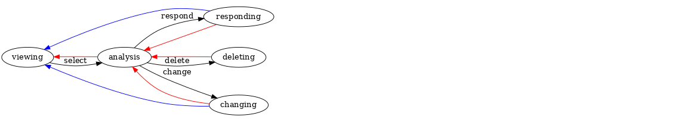

Автоматический поиск работы
Table of Contents
- Интро
- Специализация дла HeadHunter
- Функции преобразования
- Разделение тизеров вакансий
- Разбор тизеров вакансий
- Сбор тизеров
- Экспертная система
- Жизненный цикл вакансии
- OCR
- Автоматическое создание резюме
- Ручное создание резюме
- Сценарий обработки вакансий
- Сценарий обработки отзывов
- TODO Получение статусов при парсинге
- TODO События
- TODO Переписка с работодателем
- TODO Парсинг резюме
- Сборка
Интро
Большинство программистов ищут (или искали) работу на профильных сайтах и каждый из них хоть раз задумывался об автоматизации рутинных операций.
Я решил пойти дальше и разработал экспертную систему, которая ищет работу за меня в автоматическом режиме. Здесь я опишу как она устроена и работает.
Чтобы использовать такую экспертную систему не требуется вникать в механизм ее работы, достаточно просто:
- Определить источник вакансий, откуда они будут собираться
- Определить правила их обработки
- Наслаждаться результатом, который может включать автоматическое создание и отправку резюме, если это предусмотрено в правилах, составленных на предыдущем этапе
Все это происходит в функции run. Полученный результат [TODO:gmm] - как посмотреть?
Но если необходимо расширить экспертную систему, например, подключить еще один источник вакансий, или изменить парсер, потребуется представлять ход работы хотя бы в общих чертах.
Для ознакомления "без глубокого погружения" стоит читать разделы:
- Базовые концепции
- Экспертная система
- Жизненный цикл вакансии
Базовые Концепции
Для понимания того, что написано ниже, достаточно разобраться с несколькими вещами:
Источник вакансий
Источник вакансий - это сущность, откуда можно получать вакансии. Например, это может быть сайт HeadHunter.ru, целевое приглашение HR-а работодателя в LinkedIn, письмо в электронной почте или даже автоматически найденный пост в блоге.
Система должна выгребать все доступные вакансии из всех известных ей источников, сразу после запуска. В процессе получения вакансий, к ним применяется набор правил, после чего они попадают в базу.
Генератор вакансий
Генератор вакансий - это функция, которая при каждом своем вызове возвращает вакансию. Это наш способ получать вакансии по одной. Внутри генератора есть какое-то состояние, чтобы каждый раз отдавать новую вакансию.
Генератор вакансии - это полупредикат, следующей вакансии может не быть (кончились),
поэтому мы передаем ему два продолжения - success и failure. Оба продолжения
принимают один параметр. Если вакансия есть, она будет передана в success, иначе
ошибка будет передана в failure.
Фабрика генераторов
Фабрика - это функция, которой надо дать источник вакансий и тогда она вернет функцию-генератор. Иногда фабрике может понадобится еще какие-то данные, специфичные для каждого источника. Поэтому я оформляю фабрику как обобщенную функцию с неопределенным числом ключевых аргументов (каждому источнику возможно будут нужны свои аргументы):
(defgeneric factory (vac-src &optional &key &allow-other-keys) (:documentation "Return the function-generator of vacancyes"))
Многопользовательский доступ
Предполагается, что создаваемая экспертная система перестанет быть однопользовательской и станет сервисом по поиску работы для неограниченного кол-ва пользователей. Следует проверить, что не возникают состояния гонки при обработки вакансий и что все части системы могут масштабироваться.
Пример использования
Этого хватит для того, чтобы сделать функцию, которая получает от фабрики генератор и вызывает его 100 раз, или пока не наткнется на ошибку (например закончились вакансии). Полученные вакансии печатаются:
(defun print-all-teasers ()
(let ((generator (factory 'hh :some-key-param some-value ....)))
(loop :for i :from 1 :to 100 :do
(funcall generator
(lambda (tag msg data) ;; failure
(dbg "ERROR: ~A - ~A~%~A" tag msg (length data))
(return-froom print-all-teasers nil))
(lambda (x) ;; success
(dbg "~%~A~%" (bprint x)))))))
Разумеется можно сделать нечто более умное, чем просто распечатать тизер вакансии. Об этом подробнее рассказывается в разделе "Экспертная система" этого документа.
Специализация дла HeadHunter
Все что выше было определено довольно абстрактно. Теперь конкретизируем абстракции для одного из возможных источников:
Фабрика генераторов для HeadHunter
Сайт https://hh.ru представляет собой удобный источник вакансий, в котором вакансии публикуются на страницах сайта. Эти страницы формируются на сервере, поэтому мы можем получить вакансии разбором html-кода.
На сайте есть поисковая форма с выдачей. Сама выдача представляет собой список
т.н. "тизеров" вакансий, каждый тизер ведет на страницу вакансии. Поэтому нам нужен
url страницы тизеров, в котором мы можем менять страницу поисковой выдачи в одном из
get-параметров. Мы передаем его как teaser-url, а начальную страницу как idx.
Мы также передаем ref чтобы создать впечатление у сервера, что мы не бот, а
обычный броузер-клиент и пришли с предыдущей страницы сайта. Вместе с этим мы передаем
необходимые cookies.
Если мы хотим иметь возможность откликаться на вакансии внутри интерфейса сайта, нам
также нужно передавать объект src-account, который содержит все необходимое, чтобы
восстановить сессию: логин, пароль и ФИО пользователя, по которому мы определяем, что
успешно залогинились - ФИО появляется в html-коде при успешном логине.
Мы также передаем три функции для того, чтобы иметь возможность модифицировать способ работы со страницами, способ разбиения поисковой выдачи на тизеры и способ разбора тизеров:
- get-page-fn
- split-teasers-fn
- parse-teaser-fn
Опираясь на всю эту информацию, передаваемую в параметрах, фабрика может создать
множество разных генераторов вакансий для сайта https://hh.ru с разными внутренними
сценариями обработки вакансий. Таким образом, каждый из пользователей системы может
иметь несколько таких генераторов. Например, если сайт будет предоставлять API для
получения вакансий - можно иметь по одному генератору для каждой версии API и еще один
для парсинга html (как если бы мы получали информацию используя броузер).
Вне зависимости от того, как именно был параметризован генератор при его создании фабрикой, чтобы получить следующую вакансию нужно просто его вызвать. Поэтому сам генератор представляет собой именованную лямбда-функцию в замыкании, которую возвращает фабрика. Замкнутые переменные являются параметрами factory.
Генератор использует helper-метод (и его around), который обеспечивает процессинг каждой полученной вакансии через систему правил:
- hhprocessaround
- hhprocess
Эти методы будут рассмотрены в разделе Экспертная система
При этом сами правила вынесены в специальные переменные rules-for-teasers и
rules-for-vacs. Эти переменные определяются (в функции run) уже после создания
фабрикой генератора вакансий, но до его вызова. В будущем при проверке многопоточной
работы следует проверить, что это не вызывает ошибок.
(defmethod factory ((vac-src (eql 'hh))
&optional &key
teaser-url idx ref
cookie-jar src-account
get-page-fn split-teasers-fn
parse-teaser-fn (teasers nil)
&allow-other-keys)
(dbg ":factory:")
<<hh_process_around>>
<<hh_process>>
<<hh_vac_gen>>
)
Генератор вакансий для HeadHunter
Генератор вакансий для HeadHunter хранит внутри себя некоторое количество тизеров
вакансий. Каждый раз, когда генератор бывает вызван, он берет очередной тизер,
прогоняет его через функцию success и возвращает результат (если результат не nil,
иначе - обрабатываем следующий тизер). Функция success превращает тизеры в
вакансии и будет описана позднее, сейчас достаточно сказать, что она возвращает
nil, если тизер был отброшен.
Если тизеры вакансий закончились, генератор вызывает load-next-teasers-page, чтобы
загрузить в себя тизеры со следующей по счету страницы поисковых результатов сайта. Для
этого генератор хранит url и idx этой страницы в своем состоянии.
;; возвращает функцию-генератор в лексическом замыкании,
;; которая принимает два продолжения
(alexandria:named-lambda hh-get-vacancy (failure success)
(labels (
;; Загружает следующую страницу тизеров в TEASERS
<<hh_load_next_teasers_page>>
;; Возвращает следующий тизер из пула тизеров.
;; Если пул пуст, то вызывает LOAD-NEXT-TEASER-PAGE чтобы наполнить его
<<hh_get_teaser>>
)
(tagbody get-new-teaser
(let* ((teaser (get-teaser))
(current-vacancy (funcall success teaser)))
(if (null current-vacancy)
(go get-new-teaser)
(return-from hh-get-vacancy current-vacancy))))))
Функция, возвращающая следующий тизер вакансии
Эта функция извлекает очередной тизер и преобразует его с помощью функции
parse-teaser-fn, чтобы получить plist. Если teasers пуст - она вызывает
load-next-teasers-page для получения следующей порции.
(GET-TEASER ()
(dbg ":get-teaser:")
(when (equal 0 (length teasers))
(load-next-teasers-page))
(prog1 (funcall parse-teaser-fn (car teasers))
(setf teasers (cdr teasers))))
Функция, загружающая следующие тизеры
Эта функция вызывается, когда генератор вакансий обнаруживает, что у него в teasers
закончились тизеры вакансий. Она загружает следующую страницу поисковой выдачи и
применяет к ней функцию split-teasers-fn чтобы получить список тизеров, который и
будет сохранен в teasers.
(LOAD-NEXT-TEASERS-PAGE ()
(dbg ":load-next-teasers-page: (page=~A)" idx)
(funcall get-page-fn (format nil teaser-url idx) cookie-jar src-account ref
(lambda (tag msg data) ;; failure
(dbg ":load-next-teaser-page:error: ~A" msg)
(funcall failure tag msg data))
(lambda (teasers-page-content new-cookie-jar new-ref) ;; success
(setf cookie-jar new-cookie-jar)
(setf ref new-ref)
(setf teasers (funcall split-teasers-fn teasers-page-content))
(incf idx)
(when (equal 0 (length teasers))
(funcall failure 'no-more-teasers "no more teasers" nil)))))
- Функция получения веб-страниц
Эта функция обеспечивает получение веб-страниц с сайта HeadHunter, для этого мы передаем ее как параметр в фабрику.
Кроме того, она пытается залогиниться на сайт, поэтому мы также передаем в фабрику объект-аккаунт, содержащий все необходимое.
Внутри себя она вызывает
hh-is-loggedиhh-reсovery-login(defparameter *user-agent* "Mozilla/5.0 (X11; Ubuntu; Linux x86_64; rv:35.0) Gecko/20100101 Firefox/35.0") (defparameter *additional-headers* `(("Accept" . "text/html,application/xhtml+xml,application/xml;q=0.9,*/*;q=0.8") ("Accept-Language" . "ru-RU,ru;q=0.8,en-US;q=0.5,en;q=0.3") ("Accept-Charset" . "utf-8"))) (defparameter *need-start* t) (defun hh-get-page (url cookie-jar src-account referer failure success) "Получение страницы" ;; Если ни одного запроса еще не было - сделаем запрос к главной и снимем флаг (when *need-start* (drakma:http-request "https://hh.ru/" :user-agent *user-agent* :redirect 10 :force-binary t :cookie-jar cookie-jar) (setf referer "https://hh.ru/") (setf *need-start* nil)) ;; Делаем основной запрос по урлу из параметров, сохраняя результат ;; в response и обновляя cookie-jar (let ((response "") (repeat-cnt 0)) (tagbody repeat (multiple-value-bind (body-or-stream status-code headers uri stream must-close reason-phrase) (drakma:http-request url :user-agent *user-agent* :force-binary t :cookie-jar cookie-jar :redirect 10 :additional-headers (append *additional-headers* `(("Referer" . ,referer)))) (dbg ":hh-get-page: ~A : ~A" status-code url) (if (equal 404 status-code) (funcall failure 'hh-404-error url (flexi-streams:octets-to-string body-or-stream :external-format :utf-8)) (setf response (flexi-streams:octets-to-string body-or-stream :external-format :utf-8)))) ;; Если мы не залогинены: (unless (is-logged response) ;; Проверяем, не превышено ли кол-во попыток восстановления (if (>= repeat-cnt 3) ;; Если их больше трех - сигнализируем ошибку (funcall failure 'max-recovery-login "max recovery login cnt" response) ;; Иначе пытаемся восстановить сессию (progn (hh-recovery-login src-account (lambda (tag msg data) ;; recovery failure ;; выводим сообщение и ничего не делаем (3 попытки) (dbg "hh-get-page :: recovery failure")) (lambda (recovery-cookie-jar html) (setf response html) (setf cookie-jar recovery-cookie-jar) (setf referer "https://hh.ru/account/login"))) ;; Увеличиваем счетчик попыток (incf repeat-cnt) ;; Пробуем загрузить страницу снова (go repeat))))) ;; Возвращаем значения в success-продолжение (funcall success response cookie-jar url))) - Функция проверки авторизации
(defun is-logged (html) "Проверяем наличие в html блока 'Войти'" (let ((res (not (contains html "data-qa=\"mainmenu_loginForm\">Войти</div>")))) (dbg ":is-logged: ~A" res) res)) - Функция восстановления авторизации
Мы хотим в случае обрыва сессии перелогиниваться прозрачно для всего остального кода.
Для этих целей мы передаем в
hh-recovery-loginобъектsrc-account, который содержит все необходимое, чтобы восстановить сессию: логин, пароль и ФИО пользователя, по которому мы определяем, что успешно залогинились.Мы также передаем два продолжения.
Продолжение
successвызывается в случае успешного логина и получает:- новый
cookie-jar, который нужно использовать для работы внутри сессии html
Продолжение
failureвызывается при неуспехе и ему передается:tagошибкиmsg-сообщение для выводаdata- html-данные, которые представляют собой полученный ответ
;; Вспомогательная функция (defun get-cookies-alist (cookie-jar) "Получаем alist с печеньками из cookie-jar" (loop :for cookie :in (drakma:cookie-jar-cookies cookie-jar) :append (list (cons (drakma:cookie-name cookie) (drakma:cookie-value cookie))))) (defun hh-recovery-login (src-account failure success) (dbg ":hh-recovery-login:") ;; Сначала заходим на главную как будто первый раз, без cookies (setf drakma:*header-stream* nil) (let* ((start-uri "https://hh.ru/") (cookie-jar (make-instance 'drakma:cookie-jar)) (additional-headers *additional-headers*) (response (drakma:http-request start-uri :user-agent *user-agent* :additional-headers additional-headers :force-binary t :cookie-jar cookie-jar :redirect 10))) ;; Теперь попробуем использовать cookies для логина ;; GMT=3 ;; _xsrf= ;; hhrole=anonymous ;; hhtoken= ;; hhuid= ;; regions=2 ;; unique_banner_user= ;; И заходим с вот-таким гет-запросом: ;; username=avenger-f@ya.ru ;; password=jGwPswRAfU6sKEhVXX ;; backurl=https://hh.ru/ ;; remember=yes ;; action="Войти" ;; _xsrf= ;; Для отладочной печати: ;; (setf drakma:*header-stream* *standard-output*) (let* ((post-parameters `(("username" . ,(src_login src-account)) ("password" . ,(src_password src-account)) ("backUrl" . "https://hh.ru/") ("remember" . "yes") ("action" . "%D0%92%D0%BE%D0%B9%D1%82%D0%B8") ("_xsrf" . ,(cdr (assoc "_xsrf" (get-cookies-alist cookie-jar) :test #'equal))))) (xsrf (cdr (assoc "_xsrf" (get-cookies-alist cookie-jar) :test #'equal))) (cookie-jar-2 (make-instance 'drakma:cookie-jar :cookies (append (list (make-instance 'drakma:cookie :name "GMT" :value "3" :domain "hh.ru") (make-instance 'drakma:cookie :name "_xsrf" :value xsrf :domain "hh.ru")) (remove-if #'(lambda (x) (equal "crypted_id" (drakma:cookie-name x))) (drakma:cookie-jar-cookies cookie-jar))))) (response-2 (drakma:http-request "https://hh.ru/account/login" :user-agent *user-agent* :method :post :parameters post-parameters :additional-headers (append *additional-headers* `(("Referer" . ,start-uri))) :cookie-jar cookie-jar-2 :force-binary t :redirect 10)) (html (flexi-streams:octets-to-string response-2 :external-format :utf-8))) (if (contains html (src_fio src-account)) (funcall success cookie-jar-2 html) (funcall failure 'login-failed "login failed" html))))) - новый
Функции преобразования
Эти функции и макросы нужны для преобразования дерева s-выражений. Они используются в следующих разделах. Мы будем включать их единым блоком
<<maptree_transform>> <<make_transform>> <<make_extract>>
Трансформация дерева
Описание вакансии (или ее тизера), после преобразования из html, представляет из себя дерево, в котором нам важна структура, так как требования, обязанности и прочее описываются списком. В этом списке много лишнего форматирования, для удаления которого нам необходимо уметь преобразовывать (трансформировать) дерево.
- Maptree-if
Функция
maptree-if- рекурсивный преобразователь, который возвращает новое дерево, рекурсивно вызывая аргументtransformerнаsub-tree, которые удовлетворяют аргументуpredicate.Аргумент
predicateдолжен быть лямбда-функцией, которая принимает на входsubtreeи возвращаетTилиNILАргумент
transformerдолжен быть лямбда-функцией, которая принимает на входsubtreeи возвращаетatomилиsubtreeв первом параметре, а во втором может возвратить функциюcontrol. Если эта функция возвращена, тогда дерево возвращается с замененнымtransformer-ом узлами по следующему алгоритму:(funcall control #'(lambda (x) (maptree-if predicate transformer x)) transformed-tree)В противном случае оно возвращается как есть.
Собственно функция
maptree-if, которую мы помещаем в утилиты:(defun maptree-if (predicate transformer tree) (multiple-value-bind (t-tree control) (if (funcall predicate tree) (funcall transformer tree) (values tree #'mapcar)) (if (and (consp t-tree) control) (funcall control #'(lambda (x) (maptree-if predicate transformer x)) t-tree) t-tree)))Несколько примеров работы:
;; Нерекурсивная замена (maptree-if #'(lambda (x) (and (consp x) (eq (car x) 'ping))) #'(lambda (x) `(pong ,@(cdr x))) '(progn (ping (ping (ping 1))))) ;; => (PROGN (PONG (PING (PING 1)))) ;; Рекурсивная замена (maptree-if #'(lambda (x) (and (consp x) (eq (car x) 'ping))) #'(lambda (x) (values `(pong ,@(cdr x)) #'mapcar)) '(progn (ping (ping (ping 1))) ping)) ;; => (PROGN (PONG (PONG (PONG 1)))) - Maptree-transform
maptree-transform- это аналогmaptree-if, но здесь одна функция (predicate-transformer) и ищет и трансформирует узел дерева:(defun maptree-transform (predicate-transformer tree) (multiple-value-bind (t-tree control) (aif (funcall predicate-transformer tree) it (values tree #'mapcar)) (if (and (consp t-tree) control) (funcall control #'(lambda (x) (maptree-transform predicate-transformer x)) t-tree) t-tree))) ;; mtm - синтаксический сахар для maptree-transform (defmacro mtm (transformer tree) (let ((lambda-param (gensym))) `(maptree-transform #'(lambda (,lambda-param) (values (match ,lambda-param ,transformer) #'mapcar)) ,tree)))
Макрос для создания преобразователей
Этот макрос формирует функции вида transform-*, которые осуществляют преобразование
дерева в соответствии с шаблоном, переданным в body. Функция в любом случае
возвращает дерево, преобразованное или нет.
(defmacro make-transform ((name) &body body)
(let ((param (gensym)))
`(defun ,(intern (format nil "TRANSFORM-~A" (string-upcase (symbol-name name)))) (,param)
(mtm ,@body
,param))))
Макрос для создания экстракторов
Этот макрос формирует функции вида extract-*, которые извлекают из дерева ветвь,
совпавшую с шаблоном, переданным в body. Если такой ветви не нашлось, функция
возвращает nil.
(defmacro make-extract ((name retlist) &body body)
(let ((param (gensym)))
`(defun ,(intern (format nil "EXTRACT-~A" (string-upcase (symbol-name name)))) (,param)
(block subtree-extract
(mtm (,@body
(return-from subtree-extract ,retlist))
,param)
nil))))
;; (print
;; (macroexpand-1 '(make-extract (compensation `(:compensation ,compensation))
;; `("vacancy-compensation" NIL ,compensation))))
Разделение тизеров вакансий
На этом этапе у нас на входе есть страницы поисковой выдачи, которые содержат тизеры
вакансий. Нам нужно как можно скорее превратить их в список отдельных тизеров. Для
этого функция hh-split-teasers (которую мы передаем в фабрику, чтобы параметризовать
генератор вакансий) делает следующее:
- преобразует html-код страницы в дерево s-выражений
- извлекает из этого дерева часть, которая содержит поисковую выдачу
- преобразует элементы форматирования, таких как
divиspanв "говорящие" элементы дерева для повышения читаемости (названия для преобразования извлекаются из атрибутовclassиdata-qa. - трансформирует дерево и извлекает из него список тизеров
- трасформирует элементы со вставленной рекламой и удаляет их
Таким образом мы для каждой страницы поисковой выдачи получаем список необработанных тизеров вакансий. В этих тизерах s-выражения, соответствующие html-коду еще не преобразованы в plist, с которым удобно работать.
<<html_to_tree>>
<<extract_search_results>>
<<maptreefilter>>
(defun advertp (teaser)
(equal teaser '(:GARBAGE "advert")))
(defparameter *last-parse-data* nil)
(defun hh-split-teasers (html)
"Получение списка вакансий из html"
(dbg ":hh-split-teasers:")
(setf *last-parse-data* html)
(->> (html-to-tree html)
(extract-search-results)
(maptreefilter)
(transform-vacancy-serp)
(car)
(transform-special)
(remove-if #'advertp)))
;; (print (hh-split-teasers *last-parse-data*))
;; (print *last-parse-data*)
Парсер html в s-exps
Чтобы получить вакансии со страниц поисковой выдачи - напишем парсер, который переведет
полученный html в более удобное лисп-дерево (html-to-tree). Тут же напишем и обратное
преобразование - может пригодиться.
(defun html-to-tree (html)
(html5-parser:parse-html5-fragment html :dom :xmls))
(defun tree-to-html (tree &optional (step 0))
(macrolet ((indent () `(make-string (* 3 step) :initial-element #\Space)))
(labels ((paired (subtree)
(format nil "~A<~A~A>~%~A~4:*~A</~A>~%"
(indent)
(car subtree)
(format nil "~:[~; ~1:*~{~A~^ ~}~]"
(mapcar #'(lambda (attr)
(let ((key (car attr))
(val (cadr attr)))
(format nil "~A=\"~A\"" key val)))
(cadr subtree)))
(format nil "~{~A~}"
(progn
(incf step)
(let ((ret (mapcar #'(lambda (x)
(subtree-to-html x step))
(cddr subtree))))
(decf step)
ret)))))
(singled (subtree)
(format nil "~A<~A~A />~%"
(indent)
(car subtree)
(format nil "~:[~; ~1:*~{~A~^ ~}~]"
(mapcar #'(lambda (attr)
(let ((key (car attr))
(val (cadr attr)))
(format nil "~A=\"~A\"" key val)))
(cadr subtree)))))
(subtree-to-html (subtree &optional (step 0))
(cond ((stringp subtree) (format nil "~A~A~%" (indent) subtree))
((numberp subtree) (format nil "~A~A~%" (indent) subtree))
((listp subtree)
(let ((tag (car subtree)))
(cond ((or (equal tag "img")
(equal tag "link")
(equal tag "meta"))
(singled subtree))
(t (paired subtree)))))
(t (format nil "[:err:~A]" subtree)))))
(reduce #'(lambda (a b) (concatenate 'string a b))
(mapcar #'(lambda (x) (subtree-to-html x step))
tree)))))
Экстрактор поисковых результатов
Затем нам понадобится отделить собственно поисковые результаты, с которыми будем работать:
(defun extract-search-results (tree)
(block subtree-extract
(mtm (`("div"
(("data-qa" "vacancy-serp__results"))
,@rest)
(return-from subtree-extract rest))
tree)))
Фильтр-преобразователь дерева
Поисковые результаты представляют собой список деревьев, внутри которых много html-кода, относящегося к разметке. Из-за этого их сложно читать и анализировать. Но можно преобразовать эти деревья в более удобные для анализа, следуя следующему алгоритму:
- Проходя по каждому элементу дерева
- Если элемент является списком
- Если элемент - это '("target" "blank"), то удаляем его, записывая остаток списка (cdr) на его место, потому что этот элемент не несет никакой нужной нам информации.
- Если элемент начинается с "script" (т.е. мы обоснованно предполагаем, что это тег <script>, потому что нигде не употребляется атрибут "script"), то поступаем аналогично, удаляя его
- Если элемент начинается с "div" "span" или "a", то для начала отделим атрибуты от
его содержимого.
- Если существует атрибут "data-qa", то он станет новым именем элемента, в
противном случае
- Если существует атрибут "class", то он будет новым именем элемента.
- Если есть новое имя элемента:
- Существуют блоки с именами, которые нам полностью неинтересны, поэтому мы
можем прямо здесь заменить их на их строковые имена, чтобы сделать все более
читаемым. Если мы нашли такой блок - то сделаем это. В противном случае:
- Удалим атрибуты "data-qa" и "class" из списка атрибутов
- Запишем новое имя элемента на место "div" или "span"
- Запишем обновленные атрибуты на место старых
- Существуют блоки с именами, которые нам полностью неинтересны, поэтому мы
можем прямо здесь заменить их на их строковые имена, чтобы сделать все более
читаемым. Если мы нашли такой блок - то сделаем это. В противном случае:
- Если существует атрибут "data-qa", то он станет новым именем элемента, в
противном случае
- Если элемент является списком
Реализуем этот алгоритм. Для поиска атрибутов будем использовать функцию get-attr,
которая превращает атрибуты в plist и ищет в нем.
(defun attrs-to-plist (attrs)
(mapcan #'(lambda (x)
(list (intern (string-upcase (car x)) :keyword) (cadr x)))
attrs))
;; (attrs-to-plist '(("href" "/employer/3127") ("class" "bloko-link bloko-link_secondary")
;; ("data-qa" "vacancy-serp__vacancy-employer")))
;; => (:HREF "/employer/3127" :CLASS "bloko-link bloko-link_secondary" :DATA-QA
;; "vacancy-serp__vacancy-employer")
(defun plist-to-attrs (attrs)
(loop :for attr :in attrs :by #'cddr :collect
(list (string-downcase (symbol-name attr)) (getf attrs attr))))
;; (plist-to-attrs '(:HREF "/employer/3127" :CLASS "bloko-link bloko-link_secondary" :DATA-QA
;; "vacancy-serp__vacancy-employer"))
;; => (("href" "/employer/3127") ("class" "bloko-link bloko-link_secondary")
;; ("data-qa" "vacancy-serp__vacancy-employer"))
(defun maptreefilter (tree)
(when (listp tree)
(when (and (listp (car tree)) (equal '("target" "_blank") (car tree)))
(setf tree (cdr tree)))
(when (and (listp (car tree)) (equal "script" (caar tree)))
(setf tree (cdr tree)))
(when (and (listp (car tree)) ;; fix error if car is not list
(or (equal "div" (caar tree))
(equal "span" (caar tree))
(equal "a" (caar tree))
(equal "td" (caar tree))
(equal "th" (caar tree))
(equal "table" (caar tree))
))
(let ((attrs (attrs-to-plist (cadar tree)))
(rest (cddar tree))
(name nil))
;; data-qa is primary target for new name
(aif (getf attrs :data-qa)
(progn
(setf name it))
;; else: class is secondary target for new name
(aif (getf attrs :class)
(progn
(setf name it))))
(when name
(if (or (equal name "search-result-description__item")
(equal name "search-result-item__control"))
;; Убиваем ненужное, если оно есть
(setf (car tree) name)
;; else
(progn
(remf attrs :data-qa)
(remf attrs :class)
(setf (caar tree) name) ;; new name
(setf (cadar tree) (plist-to-attrs attrs)) ;; new attrs
))))))
(cond
((null tree) nil)
((atom tree) tree)
(t (cons (maptreefilter (car tree))
(maptreefilter (cdr tree))))))
Разбор тизеров вакансий
Эта функция разбирает html-код страницы выдачи тизеров. Мы передаем ее в фабрику, чтобы параметризовать генератор, который фабрика вернет.
Функция hh-parse-teasers получает на вход html страницы поисковой выдачи
и превращает его в список вакансий. Для этого она выполняет ряд операций:
- Преобразование html-кода в дерево s-выражений
- Извлечение из этого дерева части, которая содержит поисковую выдачу
- Преобразование элементов форматирования, таких как
divиspanв "говорящие" элементы дерева для повышения читаемости (названия для преобразования извлекаются из атрибутовclassиdata-qa. - Применение набора трансформаций для получения списка тизеров в виде plists.
Технические подробности о трансформациях - далее в разделе: Трансформация дерева
Если в тизере указана зарплата, мы также получаем
- Валюту зарплаты (3х-буквенный идентификатор)
- Сумму
- Текстовое выражение, содержащее "от" или "от и до". Бывают также и варианты "от 100000 до 200000 до вычета НДФЛ".
Иногда HeadHunter синдицирует вакансии с других платформ, к примеру с CAREER.RU, тогда в вакансии может отсутствовать работодатель.
<<parse_salary_text>>
<<parse_salary_currency>>
<<teaser_transformors>>
<<plistp>>
<<my_merge_plist>>
<<tree_plist_p>>
<<linearize_teaser>>
(defparameter *last-parse-teaser* nil)
(defun hh-parse-teaser (teaser)
"Получение списка вакансий из html"
(dbg ":hh-parse-teaser:")
(setf *last-parse-teaser* teaser)
(let ((aa
(->> (transform-responder teaser)
;; (transform-rejecter)
;; (transform-inviter)
(transform-vacancy-title)
;; (transform-vacancy-archived)
;; (transform-search-item-name)
(transform-schedule)
(transform-employer)
(transform-employer-anon)
;; (transform-career)
(transform-metro)
(transform-metro-empty)
(transform-address)
(transform-bloko-link)
(transform-meta-info)
;; (transform-insider-teaser)
(transform-responsibility)
(transform-requirement)
(transform-serp-item-info)
(transform-compensation)
(transform-logo)
(transform-item-sidebar-separator)
(transform-item-sidebar)
(transform-item-sidebar) ;; sidebar in sidebar
(transform-serp-item-row)
(transform-controls-item)
(transform-date)
;; (transform-controls-last)
(transform-trigger-container)
(transform-trigger-button)
(transform-row-controls)
(transform-row-header)
(transform-g-user-content)
(transform-resume-search-item-name)
(transform-serp-premium)
(transform-serp-vacancy)
(transform-reform-meta-info) ;; remove strings
(transform-control-gt-xs)
(linearize-teaser)
)))
(print aa)))
;; (print (hh-parse-teaser *last-parse-teaser*))
;; (print *last-parse-teaser*)
Функция для разбора зарплаты
Эта функция нужна преобразователям тизеров и вакансий. Она получает на вход текстовое описание зарплатного предложения и возвращает минимальное, максимальное значение и коммент (например для описания "от 100000 до 200000 до вычета НДФЛ" будет возвращено 100000, 200000, "до вычета НДФЛ").
(defun parse-salary-text (salary-text)
(let ((salary-min nil)
(salary-max nil)
(comment ""))
(multiple-value-bind (match-p result)
(ppcre:scan-to-strings "(от (\\d+))(.*)" salary-text)
(when match-p
(setf salary-min (parse-integer (aref result 1)))
(setf salary-text (string-left-trim '(#\Space) (aref result 2)))))
(multiple-value-bind (match-p result)
(ppcre:scan-to-strings "(до (\\d+))(.*)" salary-text)
(when match-p
(setf salary-max (parse-integer (aref result 1)))
(setf salary-text (string-left-trim '(#\Space) (aref result 2)))))
(multiple-value-bind (match-p result)
(ppcre:scan-to-strings "((\\d+)-(\\d+))(.*)" salary-text)
(when match-p
(setf salary-min (parse-integer (aref result 1)))
(setf salary-max (parse-integer (aref result 2)))
(setf salary-text (string-left-trim '(#\Space) (aref result 3)))))
(setf comment salary-text)
(values salary-min salary-max comment)))
Функция для разбора валюты
Эта функция возвращает трехбуквенный код код валюты и измененное значение
salary-text.
(defun parse-salary-currency (salary-text)
(let ((currency "RUR"))
(cond ((ppcre:all-matches-as-strings "руб." salary-text)
(progn
(setf salary-text (ppcre:regex-replace-all " руб." salary-text ""))
(setf currency "RUR")))
((ppcre:all-matches-as-strings "USD" salary-text)
(progn
(setf salary-text (ppcre:regex-replace-all " USD" salary-text ""))
(setf currency "USD")))
((ppcre:all-matches-as-strings "EUR" salary-text)
(progn
(setf salary-text (ppcre:regex-replace-all " EUR" salary-text ""))
(setf currency "USD")))
(t (setf currency "RUR")))
(values currency salary-text)))
Набор преобразователей для тизеров
Эти макросы по шаблону преобразуют тизер вакансии в plist
(make-transform (vacancy-serp)
(`("vacancy-serp" NIL ,@rest)
rest))
(make-transform (responder)
(`("vacancy-serp__vacancy_responded"
(("href" ,_)) "Вы откликнулись")
`(:status "responded")))
(make-transform (rejecter)
(`("vacancy-serp__vacancy_rejected"
(("href" ,_)) "Вам отказали")
`(:status "rejected")))
(make-transform (inviter)
(`("vacancy-serp__vacancy_invited"
(("href" ,_)) "Вы приглашены!")
`(:status "invited")))
(make-transform (vacancy-title)
(`("vacancy-serp__vacancy-title"
(("href" ,href) ,@rest)
,title)
(if (search "hhcdn.ru" href)
`(:href ,href :name ,title :archived nil)
(let ((id (parse-integer (car (last (split-sequence:split-sequence #\/ href))))))
`(:src-id ,id :href ,href :name ,title)))))
(make-transform (vacancy-archived)
(`("strong" (("data-qa" "vacancy-serp__vacancy_archived"))
"Вакансия была перенесена в архив")
`(:archived t)))
(make-transform (schedule)
(`("vacancy-serp__vacancy-work-schedule"
NIL ,schedule)
`(:schedule ,schedule)))
(make-transform (responsibility)
(`("vacancy-serp__vacancy_snippet_responsibility"
NIL
,responsibility)
`(:responsibility ,responsibility)))
(make-transform (requirement)
(`("vacancy-serp__vacancy_snippet_requirement"
NIL
,requirement)
`(:requirement ,requirement)))
(make-transform (insider-teaser)
(`("vacancy-serp__vacancy-interview-insider"
(("href" ,insider)) ,@rest)
`(:insider ,insider)))
(make-transform (serp-item-info)
(`("vacancy-serp-item__info" NIL ,@rest)
`(:item-info ,@(remove-if (lambda (x)
(or (equal x " (")
(equal x ")")))
rest))))
(make-transform (serp-item-row)
(`("vacancy-serp-item__row" NIL ,@rest)
`(:row ,@rest)))
(make-transform (employer)
(`(,container
NIL
("vacancy-serp__vacancy-employer"
(("href" ,href))
,emp-name)
,@rest)
`(:emp-name ,emp-name :emp-href ,href
:emp-id ,(parse-integer
(car (last (split-sequence:split-sequence #\/ href))) :junk-allowed t))))
(make-transform (employer-anon)
(`("search-result-item__company"
NIL
,anon
("bloko-link" (("href" ,_))
("bloko-icon bloko-icon_done bloko-icon_initial-action" NIL)))
`(:emp-name ,anon :anon t)))
(make-transform (date)
(`("vacancy-serp__vacancy-date" NIL ("vacancy-serp-item__publication-date" NIL ,date))
`(:date ,date)))
(make-transform (career)
(`("vacancy-serp__vacancy_career" NIL " • CAREER.RU")
`(:garbage "career")))
(make-transform (metro)
(`("metro-station" NIL ("metro-point" (("style" ,color))) ,metro)
`(:metro ,metro :color ,color)))
(make-transform (metro-empty)
(`("metro-station" NIL ("metro-point" (("style" ,color))))
`(:garbage "metro-empty")))
(make-transform (address)
(`("vacancy-serp__vacancy-address" NIL ,address ,@rest)
`(:address ,address ,@(remove-if #'(lambda (x) (typep x 'string)) rest))))
(make-transform (bloko-link)
(`("bloko-link" (("href" ,href)) ,@rest)
`(:link ,href)))
(make-transform (meta-info)
(`("vacancy-serp-item__meta-info" NIL ,@rest)
`(:meta-info ,@rest)))
(make-transform (compensation)
(`("vacancy-serp__vacancy-compensation"
NIL
,salary-text)
(let ((salary-text (ppcre:regex-replace-all " " salary-text ""))
(salary-min nil)
(salary-max nil))
(multiple-value-bind (currency salary-text)
(parse-salary-currency salary-text)
(multiple-value-bind (salary-min salary-max comment)
(parse-salary-text salary-text)
(when (null salary-min)
(setf salary-min salary-max))
(when (null salary-max)
(setf salary-max salary-min))
`(:currency ,currency
:salary ,salary-max
:salary-text ,salary-text
:salary-min ,salary-min
:salary-max ,salary-max))))))
(make-transform (logo)
(`("vacancy-serp__vacancy-employer-logo"
(("href" ,_))
("img"
(("src" ,logo)
("alt" ,_)
("class" "vacancy-serp-item__logo"))))
`(:logo ,logo)))
(make-transform (item-sidebar-separator)
((or `("vacancy-serp-item__sidebar" NIL)
`("vacancy-serp-item__sidebar" NIL " "))
`(:garbage "sidebar-separator")))
(make-transform (item-sidebar)
(`("vacancy-serp-item__sidebar" NIL ,@rest)
`(:item-sidebar ,@rest)))
(make-transform (search-item-name)
(`("search-item-name" NIL ,contents)
`(:item-name ,contents)))
(make-transform (controls-item)
(`("vacancy-serp-item__controls-item" NIL ,@rest)
`(:garbage "controls-item")))
(make-transform (controls-last)
(`("vacancy-serp-item__controls-item vacancy-serp-item__controls-item_last" NIL ,@rest)
`(:garbage "controls-last")))
(make-transform (trigger-container)
(`("vacancy-serp-item__controls-item HH-VacancyResponseTrigger-Container g-hidden"
NIL ,@rest)
`(:trigger-container ,(car rest))))
(make-transform (trigger-button)
(`("HH-VacancyResponseTrigger-Button" NIL ,@rest)
`(:garbage "trigger-button")))
(make-transform (row-controls)
(`("vacancy-serp-item__row vacancy-serp-item__row_controls" NIL ,@rest)
`(:row-controls ,@rest)))
(make-transform (row-header)
(`("vacancy-serp-item__row vacancy-serp-item__row_header" NIL ,@rest)
`(:row-header ,@rest)))
(make-transform (g-user-content)
(`("g-user-content" NIL ,@rest)
`(:g-user-content ,@rest)))
(make-transform (resume-search-item-name)
(`("resume-search-item__name" NIL ,@rest)
`(:resume-search-item-name ,@rest)))
(make-transform (serp-premium)
(`("vacancy-serp__vacancy vacancy-serp__vacancy_premium" NIL ,@rest)
`(:premium ,@rest)))
(make-transform (serp-vacancy)
(`("vacancy-serp__vacancy" NIL ,@rest)
`(:vacancy ,@rest)))
(make-transform (special)
((or `("vacancy-serp-special vacancy-serp-special_wide" NIL)
`("vacancy-serp-special vacancy-serp-special_medium" NIL)
`("serp-special serp-special_large" NIL ,@rest)
`("serp-special serp-special_less-then-large" NIL ,@rest)
`("vacancy-serp__sticky-filters-button" NIL ,@rest))
`(:garbage "advert")))
(make-transform (control-gt-xs)
(`("vacancy-serp-item__control vacancy-serp-item__control_gt-xs" NIL ,@rest)
`(:garbage "control-gt-xs")))
;; reforming
(make-transform (reform-meta-info)
(`(:META-INFO ,@rest)
(if (not (listp rest))
`(:garbage "bad-meta-info")
`(:meta-info ,@(->> rest
(mapcar #'(lambda (x)
(if (not (listp x))
`(:garbage "и еще metro")
x)))
(remove-if (lambda (x)
(equal (car x) :garbage))))))))
Функция-предикат для plists
Это функция-предикат, которая возвращает свой параметр, если он является
правильным plist и NIL в противном случае.
(defun plistp (param)
"Test wheather PARAM is a properly formed pparam."
(when (listp param)
(loop :for rest :on param :by #'cddr
:unless (and (keywordp (car rest))
(cdr rest))
:do (return nil)
:finally (return param))))
Функция слияния plists
Это функция, которая правильным образом сливает вместе два plist-а
(defun my-merge-plists (p1 p2)
(loop with notfound = '#:notfound
for (indicator value) on p1 by #'cddr
when (eq (getf p2 indicator notfound) notfound)
do (progn
(push value p2)
(push indicator p2)))
p2)
Функция предикат tree-plists
Это функция возвращает T если список, переданный в параметре является правильным
plist-деревом.
(defun tree-plist-p (pl)
"Returns T if PL is a plist (list with alternating keyword elements). "
(cond ((null pl) t)
((and (listp pl)
(keywordp (car pl))
(cdr pl))
(tree-plist-p (cddr pl)))
((and (listp pl)
(listp (car pl)))
(and (tree-plist-p (car pl))
(tree-plist-p (cdr pl))))
(t
(progn
;; (print pl)
nil))))
Линеаризатор тизера
Эта функция превращает тизер в линейный plist
(defun linearize-teaser (vacancy)
(cond ((not (listp vacancy))
(err (format nil "Wrong teaser: ~A" vacancy)))
((not (keywordp (car vacancy)))
(mapcar #'linearize-teaser (cdr vacancy)))
((member (car vacancy)
'(:status :date :garbage :src-id :href :emp-name :address :metro :currency
:responsibility :requirement :logo :schedule :insider :archived :link))
vacancy)
((member (car vacancy)
'(:premium :vacancy :row-controls :row :item-info :item-name :meta-info
:item-sidebar :trigger-container :row-header :resume-search-item-name
:g-user-content))
(mapcan #'linearize-teaser (remove-if #'(lambda (x)
(equal (car x) :garbage))
(cdr vacancy))))
(t (err (format nil "Unknown vacancy key: ~A" (car vacancy))))))
Сбор тизеров
Со всем вышеперечисленным, чтобы получить и распечатать первые 100 тизеров вакансий нам нужно написать следующее:
<<creds>>
(let ((gen (factory 'hh
:teaser-url *hh-teaser-url*
:idx 0
:ref "https://hh.ru"
:cookie-jar (make-instance 'drakma:cookie-jar)
:src-account *hh-account*
:get-page-fn #'hh-get-page
:split-teasers-fn #'hh-split-teasers
:parse-teaser-fn #'hh-parse-teaser)))
(loop :for i :from 1 :to 100 :do
(funcall gen
(lambda (tag msg data) ;; failure
(dbg "ERROR: ~A - ~A~%~A" tag msg (length data))
(error tag))
(lambda (x)
(dbg "~%~A~%" (bprint x))))))
Необходимые входные данные
(defclass src-account ()
((id :initarg :id :accessor id)
;; идентификатор пользователя, владеющего логином
(user_id :initarg :user_id :accessor user_id)
;; идентификатор источника ("hh" - для headhunter.ru :accessor "hh" )
(src_source :initarg :src_source :accessor src_source)
;; логин пользователя на источнике
(src_login :initarg :src_login :accessor src_login)
;; пароль пользователя на источнике
(src_password :initarg :src_password :accessor src_password)
;; ФИО пользователя, чтобы определить что вход в профиль
(src_fio :initarg :src_fio :accessor src_fio)))
(defparameter *hh-account* (make-instance 'src-account
:user_id 1
:src_source "hh"
:src_login "avenger-f@yandex.ru"
:src_password "jGwPswRAfU6sKEhVXX"
:src_fio "Михаил Михайлович Глухов"))
(defparameter *hh-teaser-url*
;; "https://hh.ru/search/vacancy?clusters=true&items_on_page=100&enable_snippets=true&specialization=1.221&area=2&page=~A"
;; "https://hh.ru/search/vacancy?clusters=true &enable_snippets=true&items_on_page=100&only_with_salary=true&salary=165000&specialization=1.221&from=cluster_specialization&showClusters=true"
"https://hh.ru/search/vacancy?L_is_autosearch=false&area=2&clusters=true&enable_snippets=true&items_on_page=100&only_with_salary=true&salary=165000&specialization=1.221&page=~A"
"https://spb.hh.ru/search/vacancy?L_is_autosearch=false&area=1&clusters=true&enable_snippets=true&items_on_page=100&only_with_salary=true&salary=165000&specialization=1.221&page=~A")
Экспертная система
Конечно, собрать все тизеры вакансий - этого недостаточно. Я бы хотел получить вакансию
целиком, чтобы потом в отношении неё что-то решать. Однако, тизер часто дает достаточно
информации, чтобы отказаться продолжать. В Common Lisp есть удобный механизм
:around-методов, который мы можем использовать, чтобы вызывать или не вызывать
основной метод, в зависимости от того, что мы найдем внутри тизера. Например, здесь мы
отбрасываем тизеры без полей src-id или salary:
(defmethod hh-process :around (vac)
(dbg ":process-teaser :around:")
(aif (cond ((null (getf vac :src-id)) (dbg "no src-id"))
((null (getf vac :salary)) (dbg "no salary"))
(t vac))
(call-next-method it)
nil))
Если же :around-метод вызывает основной, то мы можем заняться получением страницы
вакансии и разбором её содержимого:
(defmethod hh-process (vac)
(dbg ":process-teaser:")
(let ((vac-uri (format nil "https://hh.ru/vacancy/~A" (getf vac :src-id)))
(ref-uri (format nil *hh-teaser-url* 1)))
(funcall get-page-fn vac-uri cookie-jar src-account ref-uri
(lambda (tag msg data) ;; failure
(dbg ":hh-process:error: ~A" msg)
(funcall failure tag msg data))
(lambda (vac-page-content new-cookie-jar new-ref) ;; success
(setf cookie-jar new-cookie-jar)
(let ((vacancy (funcall parse-vacancy-fn vac-page-content)))
(my-merge-plists vac vacancy))))))
Мы поместим эти методы внутрь фабрики, рядом с генератором, чтобы они могли использовать
все лексические переменные, которые предоставляет фабрика. Единственная функция,
которую нужно передать в дополнение к ним - функция разбора вакансии -
parse-vacancy-fn, которую я передаю как динамическую переменную:
<<creds>>
<<hh_parse_vacancy>>
(let ((gen (factory 'hh
:teaser-url *hh-teaser-url*
:idx 0
:ref "https://hh.ru"
:cookie-jar (make-instance 'drakma:cookie-jar)
:src-account *hh-account*
:get-page-fn #'hh-get-page
:split-teasers-fn #'hh-split-teasers
:parse-teaser-fn #'hh-parse-teaser)))
(let ((parse-vacancy-fn #'hh-parse-vacancy))
(declare (special parse-vacancy-fn))
(loop :for i :from 1 :to 100 :do
(dbg "~A" (bprint (funcall gen
(lambda (tag msg data) ;; failure
(dbg "ERROR: ~A - ~A~%~A" tag msg (length data))
(error tag))
#'hh-process))))))
Разумеется, внутрь этих методов можно поместить более сложную логику - например
пайплайн, прогоняюший тизер или вакансию через набор правил. Это не обязательно
правила отсева, например, одно из правил может автоматически формировать и отсылать
работодателю отклик на вакансию. Это уже, так называемая, машина Э.Поста, а все
вместе представляет собой продукционную систему с прямой цепочкой вывода. Подробнее
про продукционные системы тут.
Для получения данных из такого источника как HeadHunter у нас будет два набора правил:
- для обработки тизеров
- для обработки вакансий
При работе с уже загруженными данными мы можем иметь сколько угодно других наборов правил.
Каждое правило должно состоять из двух частей:
- условие срабатывания (назовем его
antecedent) - код, который будет выполнен, в случае если
antecedentистиненн (назоваем егоconsequent)
Мы будем задавать набор правил, как список пар. Каждая пара состоит из двух
лямбда-функций, первая из которых antecedent, вторая - consequent.
Если правило сработало, оно должно возвратить два значения:
- результат применения
consequentк тизеру или вакансии - указание процессору правил (например, прекратить обработку)
Если результат nil - тизер или вакансия отбрасывается.
Процессор правил обрабатывает следущие особые случаи:
- Если какое-то из правил возвращает во втором возвращаемом значении
:stop- обработка прекращается и возвращается текущий обработанный результат - Если какое-то из правил возвращает во втором параметре
:renew- то обработка текущего входного результата начинается с самого первого правила.

По окончании обработки возвращается результирующая вакансия (или тизер), которая может
быть модифицирована consequent-ами сработавших правил.
[TODO:gmm] Если какое-то из правил вызвало ошибку времени выполнения - можно предоставить пользовательские перезапуски в которых можно выбрать варианты:
- пропустить (
:skip) правило, вызвавшее ошибку - исправить правило и перезапустить его
- остановить (
:stop) обработку вакансии правилами - начать обработку снова (
:renew) - отредактировать вакансию вручную
Сформируем процессор правил:
(defun rule-processor (vac rules)
(dbg ":process: (count rules: ~A)" (length rules))
(let ((vac vac))
(tagbody
renew
(loop :for (ant . con) :in rules :do
(when (funcall ant vac)
(multiple-value-bind (result directive)
(funcall con vac)
(setf vac result)
(when (equal directive :stop)
(go stop))
(when (equal directive :renew)
(go renew)))))
stop)
(values vac)))
Теперь, когда у нас есть процессор правил, мы можем изменить hh-process-around, чтобы
использовать его:
(defmethod hh-process :around (vac)
(dbg ":process-teaser :around:")
(aif (rule-processor vac rules-for-teasers)
(rule-processor (call-next-method it) rules-for-vacs)
nil))
Нам также придется передать правила для тизеров и вакансий как динамические переменные
rules-for-teasers rules-for-vacs, а также корректно обрабатывать ситуации, когда
тизеры закончились - в этот момент будет вызываться ~failure~функция
<<creds>>
<<hh_parse_vacancy>>
<<rule_processor>>
(let ((gen (factory 'hh
:teaser-url *hh-teaser-url*
:idx 0
:ref "https://hh.ru"
:cookie-jar (make-instance 'drakma:cookie-jar)
:src-account *hh-account*
:get-page-fn #'hh-get-page
:split-teasers-fn #'hh-split-teasers
:parse-teaser-fn #'hh-parse-teaser)))
(let ((parse-vacancy-fn #'hh-parse-vacancy)
(rules-for-teasers
`((,(lambda (vac) (null (getf vac :src-id)))
. ,(lambda (vac) (dbg "no src-id")))
(,(lambda (vac) (null (getf vac :salary)))
. ,(lambda (vac) (dbg "no salary"))))
)
(rules-for-vacs nil))
(declare (special parse-vacancy-fn rules-for-teasers rules-for-vacs))
(loop :for i :from 1 :to 1000 :do
(dbg "~A" (bprint (funcall gen
(lambda (tag msg data) ;; failure
(cond ((equal 'NO-MORE-TEASERS tag)
(progn
(dbg "CONDITION: ~A - ~A~%~A" tag msg (length data))
(return))) ;; return from loop
((equal 'HH-404-ERROR tag)
(progn
(dbg "CONDITION: ~A - ~A~%~A" tag msg (length data))
(return))) ;; return from loop
(t (progn
(dbg "ERROR: ~A - ~A~%~A" tag msg (length data))
(error tag)))))
#'hh-process))))))
Следующий важный этап: Жизненный цикл вакансии
Разбор вакансий
Функция hh-parse-vacancy обрабатывает вакансии примерно так же как
hh-parse-vacancy-teaser обрабатывает тизеры вакансий: получает на вход html и
превращает его в вакансию. Для этого она использует те же шаги и те же функции:
- Преобразование html-кода в дерево s-выражений
- Извлечение из этого дерева части, которая содержит вакансию
- Преобразование элементов форматирования, таких как div и span в "говорящие" элементы
дерева для повышения читаемости (названия для преобразования извлекаются из атрибутов
classиdata-qa - Преобразование содержимого вакансии в plists, с отнесением отдельных элементов к разным разделам информации о вакансии (sections). Для этого используются экстракторы, описанные в предыдущих разделах.
- Слияние разделов из разных plists и формирование вакансии, которая предавляет собой 2-х уровневое plist-дерево, в котором первый уровень - ключи разделов, а их значения представляют собой второй уровень и являются plist-ами
<<transform_description>>
<<vacancy_extractors>>
<<vacancy_transformers>>
<<linearize_vacancy>>
(defun hh-parse-vacancy (html)
"Получение вакансии из html"
(dbg ":hh-parse-vacancy:")
(setf *last-parse-data* html)
(let* ((onestring (cl-ppcre:regex-replace-all "(\\n|\\s*$)" html " "))
(candidat (->> (html-to-tree onestring)
(extract-vacancy)
(maptreefilter)
(transform-script)
(transform-noprint)
(transform-black-list)
(transform-related)
(transform-longdescr)
(transform-exp)
(transform-jobtype)
(transform-metro)
(transform-contacts-body)
(transform-contacts-fio)
(transform-contacts-list)
(transform-contacts-tr)
(transform-contacts-phone)
(transform-contacts-mail)
(transform-skill-element)
(transform-skills)
(transform-street-address)
))
(vacancy `(
(:exp ,(extract-exp candidat))
(:long-descr ,(extract-descr candidat))
(:job-type ,(extract-jobtype candidat))
(:street-address ,(extract-street-address candidat))
(:skills ,(extract-skills candidat))
(:contacts ,(extract-contacts candidat))
)))
candidat
(apply #'append (linearize-vacancy vacancy))
))
;; (print (hh-parse-vacancy *last-parse-data*))
Преобразователь описания вакансии
Теперь, можно написать функцию, которая трансформирует описание, очищая его от всего лишнего:
(defun transform-description (tree-descr)
(labels ((rem-space (tree)
(cond ((consp tree) (cons (rem-space (car tree))
(rem-space (remove-if #'(lambda (x) (equal x " "))
(cdr tree)))))
(t tree))))
(append `((:p))
(mtm (`("p" nil ,@in) `((:p) ,@in))
(mtm (`("ul" nil ,@in) `((:ul) ,@in))
(mtm (`("li" nil ,@in) `((:li) ,@in))
(mtm (`("em" nil ,@in) `((:b) ,@in))
(mtm (`("strong" nil ,@in) `((:b) ,@in))
(mtm (`("br") `((:br)))
(rem-space tree-descr))))))))))
Набор экстракторов для вакансий
(make-extract (vacancy rest)
`("div" (("itemscope" "itemscope") ("itemtype" "http://schema.org/JobPosting")) ,@rest))
(make-extract (exp exp)
`(:exp ,exp))
(make-extract (descr rest)
`(:long-descr ,@rest))
(make-extract (jobtype `(:emptype ,emptype :workhours ,workhours))
`(:emptype ,emptype :workhours ,workhours))
(make-extract (street-address street-address)
`(:street-address ,street-address))
(make-extract (skills skills)
`(:skills ,skills))
(make-extract (contacts `(:fio ,fio :contacts ,rest))
`("vacancy-contacts__body" NIL (:FIO ,fio)
(:CONTACTS-LIST ,@rest)))
Набор преобразователей для вакансий
Эти макросы по шаблону преобразуют вакансии в plist
(make-transform (script)
(`("script" (("data-name" ,name) ("data-params" ,_)))
`(:garbage "script")))
(make-transform (noprint)
(`("vacancy-noprint" NIL ,_)
`(:garbage "noprint")))
(make-transform (black-list)
(`("vacancy-serp-item__controls-item" NIL ,@rest)
`(:garbage "black-list")))
(make-transform (related)
(`("vacancy-view-vacancies-from-search" NIL ,@rest)
`(:garbage "related")))
(make-transform (longdescr)
(`("vacancy-description"
(("itemprop" "description"))
,@descr)
`(:long-descr ,(transform-description descr))))
(make-transform (skill-element)
(`("skills-element"
(("data-tag-id" ,tag))
("bloko-tag__section bloko-tag__section_text"
(("title" ,title))
("bloko-tag__text" NIL ,tagtext)))
`(:skill (:tag ,tag :title ,title :tagtext ,tagtext))))
(make-transform (skills)
(`("vacancy-section" NIL ("h2" (("class" "header header_level-2")) "Ключевые навыки") ,@rest)
`(:skills ,(mapcar #'cadadr rest))))
(make-transform (street-address)
(`("meta"
(("itemprop" "streetAddress")
("content" ,street-address)))
`(:street-address ,street-address)))
(make-transform (exp)
(`("vacancy-experience" NIL ,exp)
`(:exp ,exp)))
(make-transform (jobtype)
(`("p" (("data-qa" "vacancy-view-employment-mode"))
("span" (("itemprop" "employmentType")) ,emptype) ", "
("span" (("itemprop" "workHours")) ,workhours))
`(:emptype ,emptype :workhours ,workhours)))
;; contacts not tested
(make-transform (contacts-body)
(`("vacancy-contacts__body"
NIL
("l-content-paddings" NIL ,@rest))
`(:contacts ,@rest)))
(make-transform (contacts-fio)
(`("vacancy-contacts__fio" NIL ,fio)
`(:fio ,fio)))
(make-transform (contacts-list)
(`("vacancy-contacts__list"
NIL
("tbody" NIL ,@rest))
`(:contacts-list ,rest)))
(make-transform (contacts-tr)
(`("tr" NIL
("vacancy-contacts__list-title" NIL ,_)
("td" NIL ,@contacts-data))
`(:contacts-tr ,contacts-data)))
(make-transform (contacts-phone)
(`("vacancy-contacts__phone" NIL ,phone ,@rest)
`(:phone ,phone :phone-comment ,rest)))
(make-transform (contacts-mail)
(`("vacancy-contacts__email" (("href" ,mail-link) ("rel" "nofollow")) ,email)
`(:mail-link ,mail-link :email ,email)))
(make-transform (contacts-tr)
(`("tr" NIL
("vacancy-contacts__list-title" NIL ,_)
("td" NIL ,contacts-data))
`(:contacts-tr ,contacts-data)))
(make-transform (contacts-list)
(`("vacancy-contacts__list"
NIL
("tbody" NIL ,@rest))
`(:contacts-list ,rest)))
Линеаризатор вакансии
Эта функция превращает тизер в линейный plist
(defun linearize-vacancy (vacancy)
(cond ((not (listp vacancy))
(err (format nil "Wrong vacancy: ~A" vacancy)))
((not (keywordp (car vacancy)))
(mapcar #'linearize-vacancy (cdr vacancy)))
((member (car vacancy) '(:exp :emptype :street-address :skills :contacts
:title :company :long-descr))
vacancy)
((member (car vacancy) '(:job-type))
(mapcan #'linearize-vacancy (remove-if #'(lambda (x)
(equal (car x) :garbage))
(cdr vacancy))))
(t (err (format nil "Unknown vacancy key: ~A" (car vacancy))))))
Жизненный цикл вакансии
Когда я работаю с вакансиями, я мысленно делю их на домены. В простейшем случае это
"интересные вакансии" и "неинтересные вакансии". Термин домен выбран, чтобы избежать
параллелей с ООП-классами.
Такое разделение несложно автоматизировать правилами, которые у нас уже есть - например, мне могут быть неинтересны вакансии без указания зарплаты.
От домена вакансии, зависят действия, в которых она может участвовать. Я не буду
посылать отклик на вакансию, из домена "неинтересные".
Вакансии, с которыми совершено какое-то действие, должны перемещаться в особый
домен. Если отклик на вакансию послан, то это уже "вакансия, на которую послан
отклик". И в этом домене у нее может быть действие "напомнить о себе работодателю",
если он долго не реагирует.
Вакансия, в процессе работы с ней, может переходить из домена в домен, причем некоторые
переходы необратимы: так, например, если я отправляю отклик и работодатель его прочел,
то это уже не откатить. Таким образом, можно сказать, что домены образуют
ориентированный граф.
Однако, есть некоторые особые случаи: например, я могу отправить отклик на ту же вакансию, приложив другое свое резюме, или даже зарегистрировав другой аккаунт на источнике вакансий.
Из этого есть два следствия. Первое: нужны действия, которые позволяют "откликнуться
другим резюме/аккаунтом" в доменах где работодатель "завис" на каком-то этапе. И
второе, еще более важное: на самом деле доменом обладает пара: (вакансия +
резюме), или даже тройка src-аккаунт + вакансия + резюме.
Если же мы берем одну и ту же вакансию на нескольких источниках (что вполне возможно),
то к этой тройке можно добавить еще и источник вакансий. Наконец, пользователь нашей
системы может иметь несколько аккаунтов в ней и тогда сюда можно добавить еще и
наш-аккаунт.
Здесь приходится столкнуться с недостатком выразительных средств: в большинстве языков
программирования, поведение (в нашей терминологии "действия") может быть выражено
только методами класса, классы могут образовывать "дерево наследования", но не могут
образовывать ориентированный граф, и уж точно "классом" не может быть набор из
нескольких сущностей, часть из которых, к тому же, необязательна.
Кроме того, хотелось бы, чтобы произвольные классы можно было бы добавлять и удалять,
связывать с ними действия без ограничений и манипулировать всеми описанными вещами из
пользовательской области.
Поэтому сооответствующую инфраструктуру придется изобрести и реализовать. Будем
представлять наш "составной объект" как plist, в котором ключ :domain будет
обязательным и будет хранить текущий домен. Также обязательным будет ключ :vacancy, в
котором будет лежать вакансия. Потом мы подключим необязательные вещи, например,
:resume.
В данный момент хорошим рабочим решением будет хранить такие "составные объекты" в
хэш-таблице, с ключем равным src-id вакансии:
<<creds>>
<<hh_parse_vacancy>>
<<rule_processor>>
(defparameter *vacs* (make-hash-table))
(defun run ()
(let ((gen (factory 'hh
:teaser-url *hh-teaser-url*
:idx 0
:ref "https://hh.ru"
:cookie-jar (make-instance 'drakma:cookie-jar)
:src-account *hh-account*
:get-page-fn #'hh-get-page
:split-teasers-fn #'hh-split-teasers
:parse-teaser-fn #'hh-parse-teaser)))
(let ((parse-vacancy-fn #'hh-parse-vacancy)
(rules-for-teasers
`((,(lambda (vac) (null (getf vac :src-id)))
. ,(lambda (vac) (dbg "no src-id")))
(,(lambda (vac) (null (getf vac :salary)))
. ,(lambda (vac) (dbg "no salary")))))
(rules-for-vacs nil))
(declare (special parse-vacancy-fn rules-for-teasers rules-for-vacs))
(loop :for i :from 1 :to 1000 :do
(let* ((vac (funcall gen
(lambda (tag msg data) ;; failure
(cond ((equal 'NO-MORE-TEASERS tag)
(progn
(dbg "CONDITION: ~A - ~A~%~A" tag msg (length data))
(return))) ;; return from loop
((equal 'HH-404-ERROR tag)
(progn
(dbg "CONDITION: ~A - ~A~%~A" tag msg (length data))
(return))) ;; return from loop
(t (progn
(dbg "ERROR: ~A - ~A~%~A" tag msg (length data))
(error tag)))))
#'hh-process))
(key (getf vac :src-id)))
(dbg "~A" (bprint vac))
(multiple-value-bind (old-val present)
(gethash key *vacs*)
(setf (gethash key *vacs*)
(if (not present)
`(:vac ,vac :domain :unsorted)
(progn
(dbg "vac-exists")
`(:vac ,vac :domain :unsorted))))))))))
Но сначала я начну с определения возможных доменов:
Домены
Чтобы выделить домены, представим поиск работы как автоматизируемый бизнес-процесс.
Первая стадия - получение вакансий, затем происходит сортировка вакансий на
"интересные" (interested) и "неинтересные" (uninterested).
С "интересными" ассоциируется действие "отправка отзыва". Обычно к отзыву можно что-то "приложить": резюме, сопроводительное письмо, рекомендации, портфолио, анкету или результаты теста.
Действие "отправка отзыва" должно перекинуть наш объект (как правило составной:
вакансия+резюме) в домен "отправлен отзыв" (responded), после чего ход переходит к
работодателю.
Работодатель может "просмотреть отзыв", отсортировать его в свои домены ("интересный"/ "неинтересный" соискатель, "пригласить на интервью"…). В каждом из таких доменов могут быть свои действия и возможно вложенные процессы вида "выполнение тестового задания", (в этом случае у нас появляется вложенный орграф, который снаружи может быть представлен как узел-домен).
Можно упростить систему, ограничившись только интерфейсом соискателя. Cтоит отметить,
что некоторые источники вакансий предоставляют информацию о состоянии отзыва на стороне
работодателя: был ли просмотрен отзыв (beenviewed), получен ли отказ (reject).
Дальнейший пинг-понг между работодалем и соискателем непредсказуем, поэтому требует возможности оперативно создавать/удалять и объединять/разделять домены с перемещением вакансий между ними.
В случае успеха переговоров обычно следует приглашение на интервью (invite), после
которого соискателю либо отказывают (discard) либо предлагают работу (offer).
Мы получили следующий набор доменов:
- unsorted
- uninterested
- interested
- responded
- beenviewed
- rejected
- invited
- interviewed
- offered
Действия
Действия, связанные с доменами, могут быть реализованы через правила: выборка и
построение набора правил для какого-то домена - это лишь вопрос анализа antecedent-ов
каждого правила на присутствие в них условия применимости к объекту этого домена.
Среди всех возможных действий есть такие, которые переводят объект из одного домена в другой. Во избежание путаницы и в целях удобства мы можем дать им имена, чтобы использовать эти имена в качестве команд. Соберем их в таблицу:
| action | from | to |
|---|---|---|
| drop | unsorted | uninterested |
| select | unsorted | interested |
| reselect | uninterested | interested |
| unselect | interested | uninterested |
| respond | interested | responded |
| view | responded | beenviewed |
| abort | responded | rejected |
| reject | beenviewed | rejected |
| invite | beenviewed | invited |
| chat | invited | interviewed |
| discard | interviewed | discarded |
| offer | interviewed | offered |
И по этой таблице можно построить входные данные для графа с помощью вот такого кода:
(mapcar #'(lambda (x) (princ (format "%s -> %s [label =\"%s\"];\n" (second x) (third
x) (first x)))) table)
И автоматически нарисовать то что у нас получилось:

Полученный орграф накладывает ограничения на возможные переходы из одного домена в
другой, поэтому для перехода можно использовать сгенерированную из таблицы функцию
trans, которая сигнализирует ошибку, при попытке осуществить неразрешенный переход.
OCR
TODO Скриншоты
…можно получать так:
firefox -P automated -screenshot smbc.png http://www.smbc-comics.com
(требуется создать профиль automated и зайти в него один раз, для первичной настройки
TODO Управление броузером
Распознавание текста
Исправление пути к тессеракт-файлам выполненное так, чтобы не пришлось править их в самой библиотеке cl-tesseract. Туда следует положить языковые файлы, взятые отсюда: https://github.com/tesseract-ocr/tessdata/tree/3.04.00
(handler-bind ((type-error
#'(lambda (c)
(declare (ignore c))
;; (print (compute-restarts))
(invoke-restart 'ASDF/ACTION:ACCEPT))))
(ql:quickload "cl-tesseract"))
(defparameter cl-tesseract::*tessdata-directory*
(namestring
(probe-file
"/usr/share/tesseract-ocr/tessdata/")))
;; (print
;; (cl-tesseract:image-to-text #P"~/Pictures/333.png" :lang "rus+eng"))
(ql:quickload 'clx)
(ql:quickload 'zpng)
(defmacro with-default-display ((display &key (force nil)) &body body)
`(let ((,display (xlib:open-default-display)))
(unwind-protect
(unwind-protect
,@body
(when ,force
(xlib:display-force-output ,display)))
(xlib:close-display ,display))))
(defmacro with-default-screen ((screen) &body body)
(let ((display (gensym)))
`(with-default-display (,display)
(let ((,screen (xlib:display-default-screen ,display)))
,@body))))
(defun x-size ()
(with-default-screen (s)
(values
(xlib:screen-width s)
(xlib:screen-height s))))
;; (x-size)
(defmacro with-default-window ((window) &body body)
(let ((screen (gensym)))
`(with-default-screen (,screen)
(let ((,window (xlib:screen-root ,screen)))
,@body))))
(defun raw-image->png (data width height)
(let* ((png (make-instance 'zpng:png :width width :height height
:color-type :truecolor-alpha
:image-data data))
(data (zpng:data-array png)))
(dotimes (y height)
(dotimes (x width)
;; BGR -> RGB, ref code: https://goo.gl/slubfW
;; diffs between RGB and BGR: https://goo.gl/si1Ft5
(rotatef (aref data y x 0) (aref data y x 2))
(setf (aref data y x 3) 255)))
png))
(multiple-value-bind (default-width default-height) (x-size)
(defun x-snapshot (&key (x 0) (y 0)
(width default-width) (height default-height)
(delay 0)
path)
"Return RGB data array (The dimensions correspond to the height, width,
and pixel components, see comments in x-find-color for more details),
or write to file (PNG only), depend on if you provide the path keyword"
(sleep delay)
(with-default-window (w)
(let ((image
(raw-image->png
(xlib:get-raw-image w
:x x :y y
:width width :height height
:format :z-pixmap)
width height)))
(if path
(let* ((ext (pathname-type path))
(path (if ext path (concatenate 'string path ".png")))
(png? (or (null ext) (equal ext "png"))))
(cond
(png? (zpng:write-png image path))
(t (error "Only PNG file is supported"))))
(zpng:data-array image))))))
(x-snapshot :x 0 :y 0 :path "~/Pictures/x.png")
Автоматическое создание резюме
Самое лучшее резюме - это то, которое подходит под вакансию. Поэтому логично автоматизировать построение резюме в соответствии с требованиями вакансии.
Чтобы опубликовать резюме на источнике, следует придерживаться правил источника по публикации, поэтому нам понадобится некоторая инфраструктура.
<<assembly_post>> <<send_post>> <<send_post_multiple_values>> <<with_cookie_alist>> <<utf>> <<with_set_resume_section>> <<set_resume_personal>> <<set_resume_education>> <<set_resume_position>> <<set_resume_contacts>> <<set_resume_languages>> <<set_resume_visibility>> <<set_resume_expirience>> <<set_resume_touch>>
Публикация резюме на HeadHunter
Создание резюме на hh.ru начинается с перехода на страницу "http://hh.ru/applicant/resumes/view?resume=" где расположена форма, которая предлагает добавить следующие данные:
- Фото (photo)
- Имя, возраст, город (personal)
- Контакты (contacts)
- Желаемая должность и зарплата (job-position)
- Образование (education)
- Опыт работы (experience)
Каждый из вариантов ведет на свою страницу с шаблоном "http://hh.ru/applicant/resumes/edit/%7BSECTION%7D?resume=", где в {SECTON} подставляется название раздела. На этих страницах размещены формы, которые отправляют POST-запросы, формируя секции резюме. Рассмотрим эти POST-запросы подробнее в следующих подразделах.
После отправки POST-запроса сервер запоминает данные формы в сессии и возвращает заголовок LOCATION на основную страницу резюме, но теперь присваивает резюме идентификатор. Таким образом адрес становится таким: http://hh.ru/applicant/resumes/view?resume=341309a0ff02d634530039ed1f543763556562
Drakma автоматически переходит по location, так что реальное значение resume нужно извлекать из возвращаемого значения uri.
После того, как все разделы заполнены резюме можно опубликовать.
Резюме также можно удалить по идентификатору.
Резюме сопровождается артефактами (фотографиями), которые привязываются к нему. Артефакты можно загружать, выбирать и удалять.
Видимость резюме можно настраивать. Существуют следующие настройки:
- Всему интернету
- Не видно никому Ваше резюме будет недоступно для просмотра всем работодателям и кадровым агентствам, а также не будет выводиться в результатах поиска по базе данных. Вы сможете откликаться таким резюме на заинтересовавшие вас вакансии сайта HeadHunter. При отклике на конкретную вакансию компании «Z», настройки видимости вашего резюме автоматически изменятся на «Не видно никому, кроме: компания «Z».
- Компаниям, являющимся клиентами HeadHunter
- Только перечисленным компаниям
- Компаниям, зарегистрированным на HeadHunter, кроме… Ваше резюме будет доступно для просмотра всем компаниям и кадровым агентствам, которые зарегистрированы на HeadHunter, за исключением тех, которые вы отметите в специальном окне. Таким резюме вы сможете откликаться на все вакансии сайта HeadHunter, однако те компании, которым вы запретили просматривать свое резюме, не будут иметь к нему доступ через поиск по базе данных и по прямой ссылке. При отклике на конкретную вакансию компании «Z», внесенной вами в stop-список, настройки видимости вашего резюме автоматически изменятся, и компания «Z» удалится из stop-списка.
- По прямой ссылке
Настройка видимости осуществляется на странице: http://hh.ru/applicant/resumes/edit/visibility?resume=9555a7ecff02588d3c0039ed1f454162305732 и производится посылкой POST-запроса вида:
accessType.string={VISIBILITY} _xsrf=b2dccfd0ce2ff68b2c4f795ac6d549fb
Где вместо {VISIBILITY} посылается тип видимости:
-everyone -noone -clients -invisibleResumeToVisible=true& accessType.string=clients -accessType.string=blacklist&xsrf=b2dccfd0ce2ff68b2c4f795ac6d549fb -direct
Вспомогательные макросы
Этот макрос формирует тело POST-запроса из списка точечных пар, в котором первый элемент пары - это ключ, а второй - значение.
(defmacro assembly-post (&body body)
`(format nil "~{~A~^&~}"
(mapcar #'(lambda (x)
(format nil "~A=~A" (car x) (cdr x)))
,@body)))
Этот макрос отсылает POST-запрос, формируя его с помощью assembly-post:
(defmacro send-post ((url cookie-jar cookie-alist) &body body)
`(drakma:http-request
,url
:user-agent "Mozilla/5.0 (X11; Ubuntu; Linux x86_64; rv:42.0) Gecko/20100101 Firefox/42.0"
:method :post
:content (assembly-post ,@body)
:content-type "application/x-www-form-urlencoded; charset=UTF-8"
:redirect 10
:additional-headers
`(("Accept" . "*/*")
("Accept-Language" . "en-US,en;q=0.5")
("X-Xsrftoken" . ,(cdr (assoc "_xsrf" ,cookie-alist :test #'equal)))
("X-Requested-With" . "XMLHttpRequest")
("Referer" . ,,url)
("Connection" . "keep-alive")
("Pragma" . "no-cache")
("Cache-Control" . "no-cache"))
:cookie-jar ,cookie-jar
:force-binary t))
Этот макрос оборачивает отправку POST-запроса в multiple-value-bind чтобы связать
ответ с переменными для дальнейшего использования
(defmacro with-post-response ((personal-url cookie-jar cookie-alist &body alist)
&body body)
`(multiple-value-bind (body-or-stream status-code headers
uri stream must-close reason-phrase)
(send-post (,personal-url ,cookie-jar ,cookie-alist) ,@alist)
,@body))
Этот макрос получает из cookie-jar ассоциативный список ключей и значений cookie и
связывает его с переменоой cookie-alist:
(defmacro with-cookie-alist ((cookie-jar) &body body)
`(let ((cookie-alist (mapcar #'(lambda (cookie)
(cons (drakma:cookie-name cookie)
(drakma:cookie-value cookie)))
(drakma:cookie-jar-cookies ,cookie-jar))))
,@body))
Этот макрос упрощает кодирование значение в utf-8
(defmacro utf (value) `(drakma:url-encode ,value :utf-8))
Теперь мы можем реализовать макросом основной сценарий заполения полей резюме: сначала запрашивем страницу конкретного резюме, потом запрашиваем страницу для заполнения одной из секций резюме, потом отправляем POST-запрос с заполенными полями, и наконец возвращаем полученный ответ:
(defmacro with-set-resume-section ((section-url &body post-data) &body body)
;; Сначала запросим базовую страницу резюме
`(let ((resume-url (format nil "https://hh.ru/resume/~A" resume-id)))
(hh-get-page
resume-url cookie-jar *hh-account* referer #'stderr
(lambda (response new-cookie-jar url)
(setf cookie-jar new-cookie-jar)
;; Теперь запрашиваем section-url
(hh-get-page
,section-url cookie-jar *hh-account* referer #'stderr
(lambda (response new-cookie-jar url)
(setf cookie-jar new-cookie-jar)
(with-cookie-alist (cookie-jar)
(with-post-response (,section-url cookie-jar cookie-alist ,@post-data)
,@body))))))))
Вот пример последовательного и аккуратного макрораскрытия этого макроса:
(print
(macroexpand-1
'(with-set-resume-section ((format nil "http://hh.ru/resume/edit/personal?resume=~A" resume-id)
`(("phone.type" . "cell")
("phone.country" . ,(utf (cell-phone-country container)))
("phone.city" . ,(utf (cell-phone-city container)))
("phone.number" . ,(utf (cell-phone-number container)))
("phone.comment" . ,(utf (cell-phone-comment container)))))
(values uri headers
(flexi-streams:octets-to-string body-or-stream :external-format :utf-8)))))
;; MACROEXPANSION
(let ((resume-url (format nil "https://hh.ru/resume/~a" resume-id)))
(hh-get-page
resume-url cookie-jar *hh-account* referer #'stderr
(lambda (response new-cookie-jar url) ;; success resume-url
(setf cookie-jar new-cookie-jar)
(hh-get-page
(format nil "http://hh.ru/resume/edit/personal?resume=~A" resume-id)
cookie-jar *hh-account* referer #'stderr
(lambda (response new-cookie-jar url) ;; success section-url
(setf cookie-jar new-cookie-jar)
;; expand of with-cookie-alist
(let ((cookie-alist (mapcar #'(lambda (cookie)
(cons (drakma:cookie-name cookie)
(drakma:cookie-value cookie)))
(drakma:cookie-jar-cookies cookie-jar))))
;; expand of with-post-response
(multiple-value-bind (body-or-stream status-code headers
uri stream must-close reason-phrase)
;; expand of send-post
(drakma:http-request
(format nil "http://hh.ru/resume/edit/personal?resume=~a" resume-id)
:user-agent
"Mozilla/5.0 (X11; Ubuntu; Linux x86_64; rv:42.0) Gecko/20100101 Firefox/42.0"
:method :post
:content
;; expand of assembly-post
(format nil "~{~a~^&~}"
(mapcar #'(lambda (x) (format nil "~a=~a" (car x) (cdr x)))
`(("phone.type" . "cell")
("phone.country" . ,(utf (cell-phone-country container)))
("phone.city" . ,(utf (cell-phone-city container)))
("phone.number" . ,(utf (cell-phone-number container)))
("phone.comment" . ,(utf (cell-phone-comment container))))))
:content-type "application/x-www-form-urlencoded; charset=UTF-8" :redirect 10
:additional-headers `(("Accept" . "*/*")
("Accept-Language" . "en-US,en;q=0.5")
("X-Xsrftoken" . ,(cdr (assoc "_xsrf" cookie-alist
:test #'equal)))
("X-Requested-With" . "XMLHttpRequest")
("Referer" . ,(format
nil
"http://hh.ru/resume/edit/personal?resume=~a"
resume-id))
("Connection" . "keep-alive")
("Pragma" . "no-cache")
("Cache-Control" . "no-cache"))
:COOKIE-JAR COOKIE-JAR :FORCE-BINARY T)
(values uri headers
(flexi-streams:octets-to-string body-or-stream :external-format
:utf-8)))))))))
Вспомогательные средства кодогенерации
Задача кодогенерации
При создании функций, которыре отправляют данные с помощью POST-запросов, приходится писать слишком много шаблонного кода для построения пост запроса в стиле:
(make-post-data
`(("phone.type" . "cell")
("phone.country" . ,(utf (cell-phone-country some-container-variable)))
("phone.city" . ,(utf (cell-phone-city some-container-variable)))
("phone.number" . ,(utf (cell-phone-number some-container-variable)))
("phone.comment" . ,(utf (cell-phone-comment some-container-variable))))
)
Хочется избежать необходимости делать это вручную, заставив emacs создавать такой код. В качестве исходных данных у нас будет таблицы, размещенные в этом литературном исходнике, например такого вида:
| phone.type | :cell |
| phone.country | cell-phone-country |
| phone.city | cell-phone-city |
| phone.number | cell-phone-number |
| phone.comment | cell-phone-comment |
Чтобы сгенерировать из нее кусок кода, приведенный выше, я хочу написать вызов процедуры генерации кода, передав ей в качестве параметров имя таблицы и имя переменной-контейнера, которая должна быть подставлена в генерируемый код:
(make-post-data <<gen_post(example_table_for_emacs_generator, "some-container-variable")>> )
Тогда после генерации я могу собрать все сгенерированные блоки и выгрузить их в файл, получив результат, приведенный в первом примере этого подраздела
... <<example_of_generated_code>> ...
TODO Фотография резюме
Публикация фото не является обязательной или приоритетной задачей, поэтому я просто оставлю в подразделах примеры POST-запросов, чтобы сделать это "когда-нибудь потом".
При выборе уже загруженных фото
photo.string=94187420 type=RESUME_PHOTO file= title=&_xsrf=b2dccfd0ce2ff68b2c4f795ac6d549fb
При загрузке новой фотографии
POST http://hh.ru/applicant/resumes/artifacts/upload
Content-Type: multipart/form-data; boundary=---------------------------41026768278304188928476747 Content-Length: 1364120 -----------------------------41026768278304188928476747 Content-Disposition: form-data; name="_xsrf" b2dccfd0ce2ff68b2c4f795ac6d549fb -----------------------------41026768278304188928476747 Content-Disposition: form-data; name="user" 3681852 -----------------------------41026768278304188928476747 Content-Disposition: form-data; name="type" RESUME_PHOTO -----------------------------41026768278304188928476747 Content-Disposition: form-data; name="file"; filename="20150726_212228.jpg" Content-Type: image/jpeg
Удаление фото
POST http://hh.ru/applicant/resumes/artifacts/remove
id=98616186 user=3681852
Персональная информация
Сопоставим каждому полю в POST-запросе соответствующий accessor:
| lastName.string | last-name |
| firstName.string | first-name |
| middleName.string | middle-name |
| birthday.date | birthday |
| gender.string | gender |
| area.string | area |
| metro.string | metro |
| relocation.string | relocation |
| relocationArea.string | relocation-area |
| businessTripReadiness.string | business-trip-readiness |
| citizenship | citizen-ship |
| citizenship.string | citizen-ship |
| workTicket | work-ticket |
| workTicket.string | work-ticket |
| travelTime.string | travel-time |
Сгенерируем из этой таблицы код, который формирует POST-запрос и напишем процедуру которая его отсылает:
(defparameter *personal*
'(:last-name "Глухов"
:first-name "Михаил"
:middle-name "Михайлович"
:birthday "1982-12-15"
:gender "male"
:area "2"
:metro ""
:relocation "relocation_possible"
:relocation-area "1"
:business-trip-readiness "ready"
:citizen-ship "113"
:work-ticket "113"
:travel-time "any"))
(defun set-resume-personal (plist)
(with-set-resume-section
((format nil "http://hh.ru/applicant/resumes/edit/personal?resume=~A" resume-id)
<<gen_post(personal_eq, "plist")>>
)
(setf resume-id (cadr (split-sequence:split-sequence #\= (puri:uri-query uri))))
(print resume-id)))
;; (let* ((cookie-jar (make-instance 'drakma:cookie-jar))
;; (resume-id "")
;; (referer "https://hh.ru"))
;; (declare (special cookie-jar resume-id referer))
;; ;; Сначала запросим основную страницу всех резюме
;; (resume-base
;; ;; Теперь запросим страницу personal, получая resume-id
;; (lambda (response new-cookie-jar url)
;; (setf cookie-jar new-cookie-jar)
;; ;; (resume-personal *personal*)
;; (set-resume-personal *personal*)
;; )))
Образование
На этой странице можно сразу заполнить поля, связанные с владением языками, но мы не будем это делать. Вместо этого воспользуемся потом страницей редактирования.
| educationLevel.string | :higher |
| primaryEducation.id | : |
| primaryEducation.name | name |
| primaryEducation.universityId | :39864 |
| primaryEducation.facultyId | : |
| primaryEducation.organization | organization |
| primaryEducation.result | result |
| primaryEducation.specialtyId | specialty-id |
| primaryEducation.year | year |
| additionalEducation.id | : |
| additionalEducation.name | : |
| additionalEducation.organization | : |
| additionalEducation.result | : |
| additionalEducation.year | : |
| certificate.id | : |
| certificate.type | : |
| certificate.selected | : |
| certificate.ownerName | : |
| certificate.transcriptionId | : |
| certificate.password | : |
| certificate.title | : |
| certificate.achievementDate | : |
| certificate.url | : |
| attestationEducation.id | : |
| attestationEducation.name | : |
| attestationEducation.organization | : |
| attestationEducation.result | : |
| attestationEducation.year | : |
(defparameter *education*
'(:education-id ""
:name "Санкт-Петербургский национальный исследовательский университет информационных технологий, механики и оптики, Санкт-Петербург"
:university-id "39872"
:faculty-id ""
:organization "Прикладная математика и информатика"
:result "Математические модели и алгоритмы в разработке программного обеспечения"
:specialty-id ""
:year "2020"))
(defun set-resume-education (plist)
(with-set-resume-section
((format nil "http://hh.ru/applicant/resumes/edit/personal?resume=~A" resume-id)
(append
<<gen_post(education_eq, "plist")>>
`(("_xsrf" . ,(cdr (assoc "_xsrf" cookie-alist :test #'equal))))
))
(print "education ok")))
Желаемая должность и зарплата
В этой секции программист hh наверно не был слишком аккуратен, поэтому в POST-запросе передаются какие-то мусорные profarea. Но мы дисциплинованно передаем их, чтобы не отличаться от простого пользователя.
| profarea | : |
| profarea | :1 |
| profarea | :2 |
| profarea | :3 |
| profarea | :4 |
| profarea | :5 |
| profarea | :6 |
| profarea | :7 |
| profarea | :8 |
| profarea | :9 |
| profarea | :10 |
| profarea | :11 |
| profarea | :12 |
| profarea | :13 |
| profarea | :14 |
| profarea | :16 |
| profarea | :17 |
| profarea | :18 |
| profarea | :19 |
| profarea | :20 |
| profarea | :21 |
| profarea | :22 |
| profarea | :23 |
| profarea | :24 |
| profarea | :25 |
| profarea | :26 |
| profarea | :15 |
| profarea | :27 |
| profarea | :29 |
| salary.currency | :RUR |
| employment.string | :full |
| workSchedule.string | :fullday |
Важно чтобы названия у разных резюме отличались, иначе возращается ошибка.
(defun set-resume-position (title salary-amount specializations)
(with-set-resume-section
((format nil "http://hh.ru/applicant/resumes/edit/position?resume=~A" resume-id)
(append
`(("title.string" . ,(utf title))
("profArea" . ,(utf "1")))
(mapcar #'(lambda (x)
`("specialization.string" . ,(utf x)))
(split-sequence:split-sequence #\Space specializations))
<<gen_post(position_eq, "plist")>>
`(("salary.amount" . ,(utf salary-amount)))
`(("_xsrf" . ,(cdr (assoc "_xsrf" cookie-alist :test #'equal))))))
(print "position ok")))
Контакты
Страница hh.ru, которая принимает POST-запрос, изменяющий контакты, использует
позиционные маркеры, вроде phone.type, которые отделяют друг от друга блоки
одинаковых ключей. Поэтому мне пришлось немного модифицировать gen_post, чтобы
позиционные маркеры отправлялись "как есть", а не оборачивалось в вызов accessor-a. В
остальном все работает таким же образом как и в предыдущем разделе.
| phone.type | :cell |
| phone.formatted | cell-phone |
| phone.comment | cell-phone-comment |
| phone.type | :home |
| phone.formatted | home-phone |
| phone.comment | home-phone-comment |
| phone.type | :work |
| phone.formatted | work-phone |
| phone.comment | work-phone-comment |
| email.string | email-string |
| preferredContact.string | preferred-contact |
| personalSite.type | :icq |
| personalSite.url | icq |
| personalSite.type | :skype |
| personalSite.url | skype |
| personalSite.type | :freelance |
| personalSite.url | freelance |
| personalSite.type | :moikrug |
| personalSite.url | moikrug |
| personalSite.type | |
| personalSite.url | |
| personalSite.type | |
| personalSite.url | |
| personalSite.type | :personal |
| personalSite.url | personal |
| personalSite.type | :livejournal |
| personalSite.url | livejournal |
| personalSite.type | :personal |
| personalSite.url | personal-site |
(defparameter *contacts*
'(:cell-phone "+79112869290"
:cell-phone-comment ""
:home-phone ""
:home-phone-comment ""
:work-phone ""
:work-phone-comment ""
:email-string "avenger-f@yandex.ru"
:preferred-contact "email"
:icq ""
:skype ""
:freelance ""
:moi_krug ""
:linkedin ""
:facebook ""
:livejournal "" ;; "http://rigidus.livejournal.com"
:personal-site "http://rigidus.ru"))
(defun set-resume-contacts (plist)
(with-set-resume-section
((format nil "http://hh.ru/applicant/resumes/edit/contacts?resume=~A" resume-id)
(append
<<gen_post(contacts_eq, "plist")>>
`(("_xsrf" . ,(cdr (assoc "_xsrf" cookie-alist :test #'equal))))))
(print "contacts ok")))
Знание языков
(defparameter *languages*
`((:lang-id "34" :lang-degree "native")
(:lang-id "57" :lang-degree "can_read")
(:lang-id "58" :lang-degree "basic")
(:lang-id "59" :lang-degree "none")))
(defun set-resume-languages (plist)
(with-set-resume-section
((format
nil
"https://hh.ru/applicant/resumes/edit/education?resume=~A&field=language"
resume-id)
(append
(loop :for lang :in plist :append
`(("language.id" . ,(utf (format nil "~A" (getf lang :lang-id))))
("language.degree" . ,(utf (format nil "~A" (getf lang :lang-degree))))))
`(("_xsrf" . ,(cdr (assoc "_xsrf" cookie-alist :test #'equal))))))
(print "languages ok")))
Видимость резюме
(defun set-resume-visibility (val)
(with-set-resume-section
((format
nil
"https://hh.ru/applicant/resumes/edit/visibility?resume=~A"
resume-id)
(append
`(("accessType.string" . ,val))
`(("_xsrf" . ,(cdr (assoc "_xsrf" cookie-alist :test #'equal))))))
(format t "~% visibility is ~A" val)))
Опыт работы
(defparameter *expiriences*
(list
(job :name "Частная компания (блокчейн-стартап)"
:site ""
:position "Блокчейн-инженер, разработчик виртуальной машины для смарт-контрактов"
:start-date "2018-03-01"
:end-date "" ;; "2016-07-01"
:description "Вещи, не связанные с карьерой, которые вы, возможно, хотите знать обо мне - тут: http://rigidus.ru/about/index.html
Стартап в стадии «после ICO», занимается разработкой блокчейн-проекта.
Я был нанят на позицию TeamLead, как человек, который понимает как работает блокчейн и может реализовать его поддержку на узлах децентрализованной сети.
На практике мне пришлось заниматься проектированием архитектуры, наймом и обучением разработчиков команды, постановкой и контролем исполнения задач и еще многими вещами, кроме работы с кодом - это, в целом, нормально для стартапов.
По договоренности с CEO и CTO после запуска TestNet я стал разрабатывать виртуальную машину для исполнения смарт-контрактов и сопутствующую функциональность.
Мои достижения:
- Приложил руку, ногу и голову к созданию тестнета
- Сделал виртуальную машину, выполняющую смарт-контракты записанные на Forth-like языке (несколько более мощном и расширяемым чем Bitcoin Script). В данный момент расширяю ее функциональность.
")
(job :name "ООО Автоматон"
:site ""
:position "TeamLead, IT-Architect"
:start-date "2015-12-01"
:end-date "2018-03-01"
:description "Компания занимается разработкой и эксплуатацией автоматизированных парковок.
Я возглавил исследовательский проект по разработке новой парковочной системы: аппаратной и программной части.
Технологии:
- Проектирование печатных плат - Kikad, Altium Designer
- Программирование: С/С++, Assembler, Erlang (телефония), PHP/JS: Symfony+React (веб-интерфейс), EmacsLisp - кодогенерация для \"исполняемых спецификаций\" и утилиты для совместной удаленной работы в команде
- Архитектурный стек - Linux on ARM Cortex A8 и Symphony+React в интерфейсе управления.
Разработку проводил с нуля, по этапам:
- Найм сотрудников
- Выбор электронных компонентов,
- Создание печатных плат,
- Написание низкоуровневого кода, управляющего шлагбаумами и опрашивающего датчики
- Написание бизнес-логики и веб-интерфейсов, через которые можно управлять парковкой удаленно,
- Подключение интернет-телефонии, для общения с клиентом парковки
Первое внедрение состоялось через полгода от начала разработки, разработка полностью окупилась через год. Разработанное решение опережает конкурирующие.
Мои достижения:
- Спроектировал программно-аппаратную архитектуру системы автоматизации платных парковок.
- Спланировал и организовал работы по разработке ПО и аппаратной части, включая подбор электронных компонентов и схемотехническое проектирование.
- Самостоятельно реализовал бизнес-логику и уровень представления (Рабочее Место Оператора) на Symfony и React
- Руководил работами по реализации транспортного уровня и уровня абстракции оборудования, выполненными удаленными разработчиками (C/C++, модули ядра, драйверы устройств)
- Организовал паралельную разработку по модульному принципу (чтобы ускорить создание продукта) и методологии kanban
- Внедрил Continuous Integration и процесс управления жизненным циклом (релизы, исправление ошибок, добавление возможностей, технический контроль качества, автоматизированное тестирование)
- Реализовал безопасное (цифровая подпись) и отказоустойчивое (откат на предыдующую версию при провале тестов) обновление прошивок через интернет.
- Автоматизировал создание и хранение документации, с использованием версионирования на базе GIT и \"executable specifications\".")
(job :name "ООО БКН"
:site "http://bkn.ru"
:position "ИТ-директор"
:start-date "2015-04-01"
:end-date "2015-12-01"
:description "Компания - второй после \"Бюллетеня недвижимости\" информационный источник в области недвижимости по С-Пб и ЛО.
Руководил разработкой и продвижением информационных решений автоматизации бизнеса агентств недвижимости (b2b и b2c).
Стек технологий: C# и ASP.NET, ExtJs
Достижения:
- Используя данные \"межагентской БД bkn-profi\" в короткие сроки создал раздел о жилых комплексах и новостройках, который по обьему вскоре достиг 60% сайта, что позволило резко увеличить доходы от рекламы на сайте.
- Реализовал на сайте bkn.ru раздел поиска и подбора квартир, комнат и жилых домов первичного и вторичного рынка, интегрировал его с межагентской БД объектов недвижимости.")
(job :name "Тренд"
:site "http://trend-spb.ru"
:position "Ведущий инженер-программист"
:start-date "2014-08-01"
:end-date "2015-03-01"
:description "Компания - молодое быстрорастущее агентство недвижимости, специализирующееся на первичном рынке (новостройки)
Автоматизировал бизнес-процесс агенства по продажам недвижимости (новостройки).
Стек технологий: Php, Nginx, Mysql, PostgreSql
Достижения:
До моего найма агенты использовали skype и google docs для отслеживания задач. Я написал CRM, модули которой (выставление цен, интерактивный подбор объектов) автоматизировали рутинные задачи.")
(job :name "Частная компания (алготрейдинг)"
:site "http://aintsys.com"
:position "Lisp/Erlang-разработчик"
:start-date "2012-04-01"
:end-date "2014-08-01"
:description "Разрабатывал решения в сфере электронных валют на базе технологии BlockChain.
Стек технологий: Erlang, Common Lisp, C++
К сожалению, по условиям NDA я не имею права распространять в сети информацию о деятельности компании и моих разработках :(")
(job :name "ООО РАВТА"
:site "http://ravta.ru"
:position "Директор по IT"
:start-date "2012-01-01"
:end-date "2012-04-01"
:description "Компания - интернет-магазин запчастей, комплектующих и расходных материалов для автомобилей.
Осуществлял руководство разработкой информационной системы предприятия, занимался постановкой задач и контролем выполнения работ. Организовывал договорную работу с подрядчиками.
Достижения:
Внедрил на фирме 1-С Предприятие и 1С-Склад и обеспечил ее интеграцию с системой TechDoc.
")
(job :name "WizardSoft"
:site "http://wizardsoft.ru"
:position "Ведущий разработчик, архитектор"
:start-date "2011-05-01"
:end-date "2012-01-01"
:description "Компания занимается автоматизацией управления затратами в стоительстве.
Достижения:
Разработал высоконагрузочный портал для проведения строительных тендеров. Прототип реализовал на Common Lisp, Postmodern и PostgreSQL. После приемки прототип был существенно расширен и переписан на PHP")
(job :name "ЦиFры"
:site "http://www.320-8080.ru"
:position "Архитектор-проектировщик, веб-программист"
:start-date "2009-09-01"
:end-date "2011-04-01"
:description "Компания - интернет-магазин цифровой техники.
Стек технологий: PHP, MySql, Jquery, Common Lisp, Memcached
Достижения:
- На первом этапе в кратчайшие сроки подготовил legacy-код к новогодним нагрузкам путем внедрения кэширования.
- Затема полностью перепроектировал и реализовал на высоконагрузочный интернет-магазин.
")
(job :name "ООО Вебдом"
:site "http://webdom.net"
:position "Ведущий веб-разработчик"
:start-date "2007-01-01"
:end-date "2009-09-01"
:description "Веб-студия
Стек технологий: Php, Nginx, MySql
Достижения:
Cпроектировал и разработал масштабируемый фреймворк, на котором теперь работает компания. CMS на его основе поставляются клиентам.")
(job :name "Почин"
:site "http://pochin.ru"
:position "Программист"
:start-date "2005-09-01"
:end-date "2007-01-01"
:description "Компания - интернет-магазин авточехлов, автозапчастей и автоинструмента.
Стек технологий: LAMP
Первоначально начинал как фриланс-программист, но скоро сотрудничество стало постоянным.
Достижения:
- Спроектировал и разработал интернет-магазин (три версии за полтора года)")))
(defparameter *about* "Мне нравится решать сложные задачи. Более подробная информация, c проектами, которые сюда не поместились: https://rigidus.ru/about/index.html
Мой гитхаб: https://github.com/rigidus/
Ключевые компетенции:
- Linux, FreeBSD
- Tcl/Tk, PHP, C/C++, Java, Common Lisp, Erlang, Forth, Assembler
- Nginx, Memcached, Redis, RabbitMQ
- MySQL, PostgreSQL
- Git
- Docker
- JavaSсript, JQuery, React, Redux
Умею сниффать сниффером и профайлить профайлером.
Не боюсь регулярных выражений.
Знаю в чем разница между венгерской нотацией и обратной польской записью.
Умею управлять машиной Тьюринга и стрелять из конечного автомата.
Грамотно выражаю свои мысли на бумаге, устно, на пальцах; и с первого раза воспринимаю чужие с тех же носителей.")
| type | :PORTFOLIO |
| portfolio.string | : |
| file | : |
| title | : |
(defmacro url-enc (&body body)
`(let ((it ,@body))
(if (equal 0 it)
""
(drakma:url-encode (format nil "~A" it) :utf-8))))
<<exp_val>>
<<about_val>>
(defun set-resume-expirience (expiriences about)
(with-set-resume-section
((format
nil
"https://hh.ru/applicant/resumes/edit/experience?resume=~A&field=experience"
resume-id)
(append
(loop :for exp :in expiriences :append
(append
`(("experience.companyName" . ,(url-enc (getf exp :name)))
("experience.companyId" . ,(url-enc (getf exp :company-id)))
("experience.companyAreaId" . ,(url-enc (getf exp :company-area-id)))
("experience.companyUrl" . ,(url-enc (getf exp :site)))
("experience.companyIndustryId" . ,(url-enc (getf exp :industry-id))))
(loop :for indstr-id :in (getf exp :industries)
:append
`(("experience.companyIndustries" . ,(format nil "~A" indstr-id))))
`(("experience.companyIndustries" . "")
("experience.id" . "")
("experience.position" . ,(url-enc (getf exp :position)))
("experience.startDate" . ,(url-enc (getf exp :start-date)))
("experience.endDate" . ,(url-enc (getf exp :end-date)))
("experience.description" . ,(url-enc (getf exp :description))))))
`(("skills.string" . ,(url-enc about)))
;; `(("skills.string" . "%D0%92+%D0%BF%D0%BE%D1%81%D0%BB%D0%B5%D0%B4%D0%BD%D0%B8%D0%B5+%D0%B3%D0%BE%D0%B4%D1%8B+%D0%BD%D0%B0%D1%85%D0%BE%D0%B6%D1%83%D1%81%D1%8C+%D0%BD%D0%B0+%D0%BF%D0%B5%D0%BD%D1%81%D0%B8%D0%B8.%0D%0A%D0%92+%D0%BF%D0%BE%D1%81%D0%BB%D0%B5%D0%B4%D0%BD%D0%B5%D0%B5+%D0%B2%D1%80%D0%B5%D0%BC%D1%8F+%D0%BD%D0%B0%D1%85%D0%BE%D0%B6%D1%83%D1%81%D1%8C+%D0%B2+%D0%BF%D0%BE%D0%B8%D1%81%D0%BA%D0%B0%D1%85+%D1%80%D0%B0%D0%B1%D0%BE%D1%82%D1%8B.%0D%0A%D0%92+%D0%BF%D0%BE%D1%81%D0%BB%D0%B5%D0%B4%D0%BD%D0%B8%D0%B5+%D0%B3%D0%BE%D0%B4%D1%8B+%D0%BF%D1%80%D0%BE%D1%85%D0%BE%D0%B4%D0%B8%D0%BB+%D1%81%D0%BB%D1%83%D0%B6%D0%B1%D1%83+%D0%B2+%D0%B0%D1%80%D0%BC%D0%B8%D0%B8.%0D%0A%D0%92+%D0%BF%D0%BE%D1%81%D0%BB%D0%B5%D0%B4%D0%BD%D0%B8%D0%B5+%D0%B3%D0%BE%D0%B4%D1%8B+%D0%BF%D1%80%D0%BE%D1%85%D0%BE%D0%B4%D0%B8%D0%BB+%D0%BE%D0%B1%D1%83%D1%87%D0%B5%D0%BD%D0%B8%D0%B5+%D0%B1%D0%B5%D0%B7+%D0%B2%D0%BE%D0%B7%D0%BC%D0%BE%D0%B6%D0%BD%D0%BE%D1%81%D1%82%D0%B8+%D1%80%D0%B0%D0%B1%D0%BE%D1%82%D0%B0%D1%82%D1%8C.%0D%0A%D0%92+%D0%BF%D0%BE%D1%81%D0%BB%D0%B5%D0%B4%D0%BD%D0%B8%D0%B5+%D0%B3%D0%BE%D0%B4%D1%8B+%D0%BD%D0%B0%D1%85%D0%BE%D0%B4%D0%B8%D0%BB%D0%B0%D1%81%D1%8C+%D0%B2+%D0%B4%D0%B5%D0%BA%D1%80%D0%B5%D1%82%D0%BD%D0%BE%D0%BC+%D0%BE%D1%82%D0%BF%D1%83%D1%81%D0%BA%D0%B5.%0D%0A"))
;; (apply 'append
;; (loop :for item :in (split-sequence:split-sequence #\Space (recommendations resume)) :collect
;; (let ((item (get-recommendation (parse-integer item))))
;; `(("recommendation.id" . ,(url-enc (recommendation-id item)))
;; ("recommendation.name" . ,(url-enc (name item)))
;; ("recommendation.position" . ,(url-enc (job-position item)))
;; ("recommendation.organization" . ,(url-enc (organization item)))
;; ("recommendation.contactInfo" . ,(url-enc (contact-info item)))))))
;; <<gen_post(expirience_eq, "resume")>>
`(("_xsrf" . ,(cdr (assoc "_xsrf" cookie-alist :test #'equal))))))
(format t "~% expiriences ok")))
Публикация резюме
(defun set-resume-touch ()
(with-set-resume-section
((format nil "https://hh.ru/applicant/resumes/touch")
(append
`(("resume" . ,resume-id)
("publish" . "next"))
`(("_xsrf" . ,(cdr (assoc "_xsrf" cookie-alist :test #'equal))))))
(format t "~% touch ok")))
TODO Удаление резюме
http://hh.ru/applicant/deleteresume/
resumeId=47592531 _xsrf=b2dccfd0ce2ff68b2c4f795ac6d549fb
Ручное создание резюме
Как оказалось при исследовании hh - обработчик POST-запроса там по видимому единый, поэтому можно отправлять POST соответствующей странице /edit/experience в /edit/personal. Думаю можно было бы отправить все данные одним пакетом, но пока мы стараемся быть похожими на обычный клиентский броузер.
(defun job (&key name (company-id "") (company-area-id "2") site (industry-id "") (industries nil) (id "") position start-date end-date description)
(list :name name :company-id company-id :company-area-id company-area-id :site site :industry-id industry-id :industries industries :id id :position position :start-date start-date :end-date end-date :description description))
(defun stderr (tag msg data) ;; failure
(dbg "ERROR: ~A - ~A~%~A" tag msg (length data))
(error tag))
(defun resume-base (next)
(let ((main-url (format nil "http://hh.ru/applicant/resumes/view?resume=~A" resume-id)))
(hh-get-page main-url cookie-jar *hh-account* referer #'stderr next)))
(defun create-resume ()
(let* ((cookie-jar (make-instance 'drakma:cookie-jar))
(resume-id "")
(referer "https://hh.ru"))
(declare (special cookie-jar resume-id referer))
;; Сначала запросим основную страницу всех резюме
(resume-base
;; Теперь запросим страницу personal, получая resume-id
(lambda (response new-cookie-jar url)
(setf cookie-jar new-cookie-jar)
(set-resume-personal *personal*)
(set-resume-education *education*)
(set-resume-position
(concatenate 'string "Blockchain Developer " (symbol-name (gensym))
)
"400000"
"3 221")
(set-resume-expirience *expiriences* *about*)
(set-resume-contacts *contacts*)
(set-resume-languages *languages*)
(set-resume-visibility "no_one")
(set-resume-touch)
))))
;; КЛЮЧЕВЫЕ НАВЫКИ
;; Java JavaScript jQuery Lisp PHP5 PostgreSQL RabbitMQ Symphony2 Yii Zend Framework
;; https://hh.ru/applicant/resumes/edit/experience?resume=1036680cff007465bc0039ed1f736563726574&field=keySkills
;; keySkills.string=Java
;; keySkills.string=JavaScript
;; keySkills.string=jQuery
;; keySkills.string=Lisp
;; keySkills.string=PHP5
;; keySkills.string=PostgreSQL
;; keySkills.string=RabbitMQ
;; keySkills.string=Symphony2
;; keySkills.string=Yii
;; keySkills.string=Zend+Framework
;; keySkills.string=MS+Visio
;; keySkills.string=Nginx
Сценарий обработки вакансий
Получив вакансии я оцениваю их в порядке - от самых интересных к менее интересным. В общем случае чем вакансия более высокооплачиваемая - тем она должна быть интереснее, но иногда внутри вакансий можно искать слова (аббревиатуры), которые делают ее интересной вне зависимости от зарплаты.
Таким образом, сценарий следующий:
viewingОтсортировать вакансии и показать их в правильном порядке- Двигаясь по порядку сделать что-то из следующего:
changingИзменить её домен (обычно на "неинтересные")respondingОтправить отклик на вакансию (что приводит к изменению домена)- При необходимости сформировав под нее резюме
deletingУдалить (для устаревших, архивных вакансий)
Когда мы делаем консольный интерфейс мы хотим, чтобы функции сценария правильным
образом вызывали друг друга. Таким образом, мы могли бы начать с viewing, который
вызовет все необходимое в зависимости от того, в каком направлении пойдет выполнение
сценария.
Чтобы избежать постоянного перелогинивания мы можем обернуть код сценария специальной
переменной cookie-jar, которая будет хранить текущие cookies так, чтобы:
- избежать протаскивания этого параметра через все шаги сценария
- эти cookies были доступны только внутри сценария, изолировано.
В перспективе, это дает нам возможность парсить вакансии одним аккаунтом, а откликаться - другим, да и архитектурно более правильно. См. далее в "Интерфейсный граф".
<<resume_assembly>>
<<get_sorted_vacs>>
<<choice>>
<<viewing>>
<<analysis>>
<<changing>>
<<deleting>>
<<get_resp_popup>>
<<popup_processor>>
<<send_respond>>
<<responding>>
(defun vac-proc ()
(let ((cookie-jar (make-instance 'drakma:cookie-jar)))
(declare (special cookie-jar))
(hh-get-page "https://hh.ru/" cookie-jar *hh-account* "https://hh.ru/" #'stderr
(lambda (response new-cookie-jar url) ;; success
(setf cookie-jar new-cookie-jar)))
(viewing *vacs* (lambda (vac)
(equal :unsorted (getf vac :domain))))))
Интерфейсный граф
Взаимодействие со сценарием можно разделить на состояния:
- просмотр вакансий
- анализ вакансии
- изменение домена вакансии
- отклик на вакансию
Находясь в состоянии "просмотр вакансий" можно выполнить действие "выбрать вакансию", которое осуществит переход в "анализ вакансии". Из "анализа вакансии" можно перейти в:
- "изменение вакансии"
- "отклик на вакансию"
- "удаление вакансии"
, а также вернуться обратно. Таким образом, получается древовидный сценарий, который мы можем задать таблично:
| action | from | to |
|---|---|---|
| select | viewing | analysis |
| back | analysis | viewing |
| change | analysis | changing |
| back | changing | analysis |
| respond | analysis | responding |
| back | responding | analysis |
| delete | analysis | deleting |
| back | deleting | analysis |
| done | responding | viewing |
| done | changing | viewing |
Сформируем граф из этой таблицы
(mapcar #'(lambda (x)
(cond ((equal (first x) "back")
(princ (format "%s -> %s [label =\"%s\", color=\"red\"];\n"
(second x) (third x) "")))
((equal (first x) "done")
(princ (format "%s -> %s [label =\"%s\", color=\"blue\"];\n"
(second x) (third x) "")))
(t
(princ (format "%s -> %s [label =\"%s\" ];\n"
(second x) (third x) (first x))))))
table)
И отобразим его, пометив красными стрелками выход "на уровень вверх":

Превратим каждое из состояний в "экран", т.е. область взаимодействия, где пользователь может выполнять какие-то действия. У каждого экрана, в соответствии с графом есть входы и выходы. Для простоты будем пока реализовывать консольный интерфейс
Список отсортированых вакансий
Берем все вакансии, кроме:
- тех, что без указания зарплаты,
- тех, у которых домен не :unsorted
формируем их них список, который сортируем по зарплате от большей к меньшей
(defun get-sorted-vacs (vacs domain-p)
(sort (loop
:for key :being :the :hash-keys :of vacs
:using (hash-value val)
:unless (null (getf (getf val :vac) :salary))
:when (funcall domain-p val)
:collect val)
(lambda (a b)
(> (getf (getf a :vac) :salary) (getf (getf b :vac) :salary)))))
Вспомогательные функции интерфеса
Поскольку у нас консольный интерфейс, можно обобщить выбор варианта пользователя в процедуру, которой передается список пар, где ключом является номер варианта, а значением - лямбда, которая должна быть вызвана.
(defun choice (acts)
(format t "~%Type your choice (0-~A): " (- (length acts) 1))
(block retval
(tagbody
reinput
(let* ((input (read-line))
(num (parse-integer input :junk-allowed t)))
(unless (equal input (format nil "~A" num))
(format t "~%Wrong input, please try again: ")
(go reinput))
(cond ((<= num (length acts))
(return-from retval
(funcall (cdr (assoc num acts)))))
(t (err (format nil "choice err: ~A" num))))))))
Просмотр вакансий
В экране "просмотр вакансий" мы должны показать несколько первых вакансий из сортированного списка и предложить пользователю список возможных действий:
- Выход
- Анализ какой-то из выбранных вакансий
(defun viewing (vacs domain-p)
(tagbody
renew
(let ((allvacs (get-sorted-vacs vacs domain-p)))
(format t "________")
(format t "~%Viewing (~A):" (length allvacs))
(format t "~%[0] - Exit")
(choice
(acons 0
(lambda ()
(return-from viewing (print 'bye)))
(loop
:for vac :in allvacs
:with idx = 0
:while (< idx 50)
:when (funcall domain-p vac)
:collect (progn
(incf idx)
(format t "~%[~A] - ~A - ~A || ~A"
idx
(getf (getf vac :vac) :salary-text)
(getf (getf vac :vac) :name)
(getf (getf vac :vac) :emp-name)
)
(cons idx
;; closure value (!)
(let ((src-id (getf (getf vac :vac) :src-id)))
(lambda ()
(analysis src-id)))))))))
(go renew)))
Анализ вакансии
Когда анализируется вакансия ее нужно вывести, а потом предложить возможные действия:
- Изменить домен вакансии
- Откликнуться на вакансию
(defun analysis (src-id)
(print src-id)
(let ((vac (gethash src-id *vacs*)))
(tagbody
renew
(format t "__________________")
(format t "~%ANALYSIS for vac # ~A~%~A" src-id (bprint vac))
(let ((crv (choice `((0 . ,(progn
(format t "~%[0] - Back to viewing")
(lambda ()
(format t "~%Return to VIEWING~%")
(return-from analysis 'back))))
(1 . ,(progn
(format t "~%[1] - Change domain")
(lambda ()
(changing src-id))))
(2 . ,(progn
(format t "~%[2] - Respond")
(lambda ()
(responding src-id))))
(3 . ,(progn
(format t "~%[3] - Delete")
(lambda ()
(deleting src-id))))))))
(cond ((equal crv 'done)
(return-from analysis 'done))
((equal crv 'back)
(go renew))
(t
(err (format nil "wrond retval in analysys ~A" crv))))))))
;; (viewing *vacs* (lambda (vac)
;; (equal :unsorted (getf vac :domain))))
Изменение домена вакансии
(defun changing (src-id)
(let ((vac (gethash src-id *vacs*)))
(format t "_________________________")
(format t "~%CHANGING DOMAIN for vac # ~A~%~A" src-id (bprint vac))
(let* ((variants '(:unsorted :uninterested :interested :responded :rejected
:beenviewed :invited :interviewed :offered)))
(choice (append
`((0 . ,(progn
(format t "~%[0] - Return to analysis")
(lambda () (return-from changing 'back)))))
(let ((acc 0))
(mapcar (lambda (x)
(let ((cnt (incf acc)))
(format t "~%[~A] - ~A" cnt x)
(cons cnt
(lambda ()
(format t "~%lmbd:change:domain to ~A~%" x)
(setf (getf vac :domain) x)))))
variants))))
'done)))
Удаление вакансии
(defun deleting (src-id)
(let ((vac (gethash src-id *vacs*)))
(format t "_________________________")
(format t "~%DELETING vac # ~A~%~A" src-id (bprint vac))
(choice `((0 . ,(progn
(format t "~%[0] - Return to analysis")
(lambda () (return-from deleting 'back))))
(1 . ,(progn
(format t "~%[1] - Сonfirm deleting [~A]"
(getf (getf vac :vac) :name))
(let ((src-id src-id))
(lambda ()
(remhash (getf (getf vac :vac) :src-id) *vacs*)
(return-from deleting 'done))))))))
'done)
Отклик существующим резюме
Отклик со страницы вакансии
Когда пользователь хочет откликнуться на вакансию, он нажимает кнопку "откликнуться" на странице вакансии. В ответ на это его броузер отправляет на сервер запрос вида:
https://hh.ru/applicant/vacancy_response/popup? vacancyId=24700517 & autoOpen=no & isTest=no & withoutTest=no & selectedResume=
Мы можем сделать это следующей функцией, которой нужно:
- видеть динамическую переменную cookie-jar для обработки cookies
- передать функцию-продолжение для обработки ответа
(defun get-resp-popup (src-account src-id response-processor-fn)
(let ((referer (format nil "https://hh.ru/vacancy/~A" src-id))
(popup-url "https://hh.ru/applicant/vacancy_response/popup?")
(get-params "vacancyId=~A&autoOpen=no&isTest=no&withoutTest=no&selectedResume="))
(labels ((stderr (tag msg data) ;; failure
(dbg "ERROR: ~A - ~A~%~A" tag msg (length data))
(error tag)))
(hh-get-page
referer cookie-jar src-account "https://hh.ru"
#'stderr ;; failure
(lambda (response new-cookie-jar url) ;; success
(setf cookie-jar new-cookie-jar)
(hh-get-page
(format nil (concatenate 'string popup-url get-params) src-id)
cookie-jar src-account referer #'stderr response-processor-fn))))))
;; (let ((cookie-jar (make-instance 'drakma:cookie-jar))
;; (src-id 24792343))
;; (declare (special cookie-jar))
;; (print
;; (get-resp-popup
;; *hh-account* src-id
;; (lambda (response new-cookie-jar url)
;; (setf cookie-jar new-cookie-jar)
;; (html-to-tree response)))))
Ответом на этот запрос приходит форма, которую клиент отображает во всплывающем окне:
<form method="post" action="/applicant/vacancy_response/popup?vacancy_id=24700517"
class="vacancy-response-popup HH-VacancyResponsePopup-Form HH-SubmitDisabler-Form">
<div class="bloko-modal-header bloko-modal-header_outlined">
<h2 class="bloko-modal-title">Отклик на вакансию</h2>
<div>«Название вакансии»</div>
</div>
<div class="vacancy-response-popup-body">
<div class="bloko-form-row">
<div class="bloko-form-item">
<div class="vacancy-response-popup-subtitle">Резюме для отклика</div>
</div>
<div class="vacancy-response-popup-resume HH-VacancyResponsePopup-Resume ">
<div class="vacancy-response-popup-resume__title">
<span class="vacancy-response-popup-resume__input">
<label class="bloko-radio">
<input type="radio"
name="resume_hash"
value="23614635ff05277e2a0039ed1f61305a413033"
id="resume_23614635ff05277e2a0039ed1f61305a413033"
class="bloko-radio__input HH-VacancyResponsePopup-Resume-Radio"
checked
data-response-disabled="false">
<span class="bloko-radio__text" data-qa="resume-title">
Senior Developer
</span>
</label>
</span>
<a href="/resume/23614635ff05277e2a0039ed1f61305a413033"
class="vacancy-response-popup-resume__link"
target="_blank"
data-qa="vacancy-response-view-resume">
Посмотреть резюме
</a>
</div>
</div>
<div class="vacancy-response-popup-resume HH-VacancyResponsePopup-Resume ">
<div class="vacancy-response-popup-resume__title">
<span class="vacancy-response-popup-resume__input">
<label class="bloko-radio">
<input type="radio"
name="resume_hash"
value="184691b4ff052841e70039ed1f4e4f4271714f"
id="resume_184691b4ff052841e70039ed1f4e4f4271714f"
class="bloko-radio__input HH-VacancyResponsePopup-Resume-Radio"
data-response-disabled="false">
<span class="bloko-radio__text" data-qa="resume-title">
Senior Developer (Java)
</span>
</label>
</span>
<a href="/resume/184691b4ff052841e70039ed1f4e4f4271714f"
class="vacancy-response-popup-resume__link"
target="_blank"
data-qa="vacancy-response-view-resume">
Посмотреть резюме
</a>
</div>
<div class="vacancy-response-popup-resume__hint">
<span class="bloko-form-hint">
Для этого резюме установлена настройка
видимости «Только перечисленным
компаниям». После отклика компания «Много
Мебели» будет добавлена
в этот список.
<a href="/applicant/resumes/edit/visibility?resume=184691b4ff052841e70039ed1f4e4f4271714f"
target="_blank">
Настроить видимость
</a>
.
</span>
</div>
</div>
...
</div>
<div class="bloko-toggle HH-VacancyResponse-Popup-ToggleBlock">
<script data-name="HH/Bloko/Toggle" data-params="">
</script>
<span class="bloko-toggle__expandable-reverse">
<span class="bloko-link-switch"
data-toggle=""
data-qa="vacancy-response-letter-toggle">
Сопроводительное письмо
</span>
</span>
<div class=" bloko-toggle__expandable">
<div class="bloko-form-item">
<div class="vacancy-response-popup-subtitle">Сопроводительное письмо</div>
</div>
<textarea name="letter"
rows="6"
maxlength="10000"
class="bloko-textarea bloko-textarea_sized-rows HH-VacancyResponsePopup-Letter ">
</textarea>
</div>
</div>
</div>
<div class="bloko-modal-footer">
<span class="g-hidden HH-VacancyResponsePopup-Error vacancy-response-popup-error"
data-hh-vacancy-response-popup-error="unknown">
Произошла ошибка, попробуйте ещё раз
</span>
<span class="g-hidden HH-VacancyResponsePopup-Error vacancy-response-popup-error"
data-hh-vacancy-response-popup-error="letter-required">
Пожалуйста, введите сопроводительное письмо
</span>
<span class="g-hidden HH-VacancyResponsePopup-Error vacancy-response-popup-error"
data-hh-vacancy-response-popup-error="test-required">
Для отклика требуется ответить на вопросы теста
</span>
<span class="g-hidden HH-VacancyResponsePopup-Error vacancy-response-popup-error"
data-hh-vacancy-response-popup-error="test-service-down">
Извините, сайт перегружен, пожалуйста, попробуйте позже</span>
<span class="g-hidden HH-VacancyResponsePopup-Error vacancy-response-popup-error"
data-hh-vacancy-response-popup-error="negotiations-limit-exceeded">
В течение 24 часов можно совершить не более 200
откликов. Вы исчерпали лимит откликов, попробуйте
отправить отклик позднее.
</span>
<span class="g-hidden HH-VacancyResponsePopup-Error vacancy-response-popup-error"
data-hh-vacancy-response-popup-error="too-long-letter">
Длина сопроводительного письма не может превышать
<letter-max-length>10000</letter-max-length>
символов
</span>
<span class="bloko-button HH-VacancyResponsePopup-Cancel">Отмена</span>
<div class="bloko-form-spacer">
<button type="submit"
class="bloko-button bloko-button_primary HH-VacancyResponsePopup-Submit HH-SubmitDisabler-Submit"
data-qa="vacancy-response-submit-popup">
<span class="bloko-button__content">Откликнуться</span>
<span class="bloko-button__loading">
<span class="bloko-icon bloko-icon_loading bloko-icon_initial-primary">
</span>
</span>
</button>
</div>
</div>
<input type="hidden" name="_xsrf" value="eb4abdd88c162392b34ef4d256418dbe">
</form>
Из этой формы мы можем узнать, что:
- на накоторые резюме без прохождения теста не ответить
- можно послать сопроводительное письмо не более чем в 10000 символов
- откликнуться можно 200 раз за 24 часа (видимо были прецеденты)
И извлечь много ценной информации:
- получить все резюме, с их видимостью
- выбрать одно из них для отклика
Разбор формы попапа
Итак, займемся разбором формы попапа:
<<popup_service>>
(defun popup-processor (response new-cookie-jar url)
(setf cookie-jar new-cookie-jar)
(let ((resumes (->> (html-to-tree response)
(extract-popup-results)
(maptreefilter)
(cdr)))
(cumulative)) ;; accumulation variable
(mapcar #'(lambda (resume)
(let ((result))
(declare (special result))
(->> (identity resume)
(transform-popup-title)
(transform-popup-value)
(transform-popup-disabled)
(transform-popup-visibility)
(transform-popup-hint)
(funcall (lambda (x)
(push (apply #'append (reverse result)) cumulative)
x))
;; (print)
)))
resumes)
(reverse cumulative)))
;; (let ((cookie-jar (make-instance 'drakma:cookie-jar))
;; (src-id 24792343))
;; (declare (special cookie-jar))
;; (print
;; (get-resp-popup *hh-account* src-id #'popup-processor)))
Для разбора формы нам потребуются вспомогательные экстракторы и трансформеры:
(defun extract-popup-results (tree)
(block subtree-extract
(mtm (`("div"
(("class" "bloko-form-row"))
,@rest)
(return-from subtree-extract rest))
tree)))
(make-transform (popup-value)
(`("value" ,value)
(let ((rv `(:value ,value)))
(push rv result)
rv)))
(make-transform (popup-disabled)
(`("data-response-disabled" ,disabled)
(let ((rv `(:disabled ,disabled)))
(push rv result)
rv)))
(make-transform (popup-title)
(`("resume-title" NIL ,title)
(let ((rv `(:title ,title)))
(push rv result)
rv)))
(make-transform (popup-visibility)
(`("a" (("href" ,_)) ,_)
"Настроить видимость"))
(make-transform (popup-hint)
(`("bloko-form-hint" NIL ,@hint)
(let ((rv `(:hint ,(format nil "~{~A~}" hint))))
(push rv result)
rv)))
Отклик из попапа
Когда пользователь выбирает в попапе одно из резюме и нажимает кнопку "Откликнуться" происходит следующее:
Отправляется POST-запрос на адрес: https://hh.ru/applicant/vacancy_response/popup?vacancy_id=24700517 и с содержимым:
resume_hash=184691b4ff052841e70039ed1f4e4f4271714f & letter= & _xsrf=eb4abdd88c162392b34ef4d256418dbe & ignore_postponed=true
В ответ на такой POST-запрос в случае успеха возвращается json вида:
{"success": "true", "topic_id": "1100154346"}
а в случае ошибки (например, если уже есть такой отклик):
{"error": "unknown"}
Иногда, некоторые вакансии требуют сопроводительного письма, возвращая вот такую ошибку, если его нет:
{"error": "letter-required"}
Посылка отклика
Нам нужна функция, которая отправит хэш выбранного резюме, т.е. сделает то же самое, что делает броузер, когда пользователь нажимает на кнопку "откликнуться" в попапе.
(defun send-respond (src-id resume-hash)
(let ((referer (format nil "https://hh.ru/vacancy/~A" src-id)))
(with-cookie-alist (cookie-jar)
(with-post-response
((format nil "https://hh.ru/applicant/vacancy_response/popup?vacancy_id=~A" src-id)
cookie-jar cookie-alist
(append
`(("resume_hash" . ,resume-hash)
("letter" . ""))
`(("_xsrf" . ,(cdr (assoc "_xsrf" cookie-alist :test #'equal))))
`(("ignore_postponed" . "true"))))
(let ((response (flexi-streams:octets-to-string body-or-stream :external-format :utf-8)))
(format t "~%Response: ~A" response)
(let ((json-response (json:decode-json-from-string (car (html-to-tree response)))))
(cond ((equal "true" (cdr (assoc :success json-response)))
(cdr (assoc :topic--id json-response)))
((equal "unknown" (cdr (assoc :error json-response)))
(progn
(format t "~%ERROR: response error (double respond?)")
'err-unk))
(t (err "response error (wtf?)")))))))))
;; (let ((cookie-jar (make-instance 'drakma:cookie-jar))
;; (src-id 24680635))
;; (declare (special cookie-jar))
;; (let ((resumes (get-resp-popup *hh-account* src-id #'popup-processor)))
;; ;; <-- место для выбора одного из резюме -->
;; (send-respond src-id "23614635ff05277e2a0039ed1f61305a413033")))
Теперь у нас есть все необходимое, чтобы реализовать отклик одним из существующих
резюме. Напишем экран responding:
Экран "респондинг"
(defparameter *cvs* (make-hash-table :test #'equal))
(setf (gethash "b905a47fff052842930039ed1f326337493675" *cvs*) (list :salary 250000))
(setf (gethash "184691b4ff052841e70039ed1f4e4f4271714f" *cvs*) (list :salary 300000))
(setf (gethash "0c6d665cff052841530039ed1f51425834794b" *cvs*) (list :salary 300000))
(setf (gethash "3bef95f7ff05283f2c0039ed1f5232654b5168" *cvs*) (list :salary 300000))
(setf (gethash "23614635ff05277e2a0039ed1f61305a413033" *cvs*) (list :salary 400000))
(defun responding (src-id)
(let ((vac (gethash src-id *vacs*)))
(format t "_________________________")
(format t "~%RESPONDING for vac # ~A~%~A" src-id (bprint vac))
(let ((resumes (get-resp-popup *hh-account* src-id #'popup-processor)))
(choice (append
`((0 . ,(progn
(format t "~%[0] - Return to analysis")
(lambda () (return-from responding 'back)))))
(loop
:for idx :from 1
:for resume :in resumes
:when (equal "false" (getf resume :disabled))
:collect (progn
(format t "~%[~A] <~A> ~A"
idx
(getf (gethash (getf resume :value) *cvs*) :salary)
(getf resume :title))
(cons idx
(let ((selected-resume-value (getf resume :value))
(selected-resume-title (getf resume :title)))
(lambda ()
(declare (special cookie-jar))
(send-respond src-id selected-resume-value)
;; сообщение
(format t "~%RESPONDED: ~A~% : ~A"
selected-resume-value
selected-resume-title)
;; изменение статуса
(setf (getf vac :domain) :responded)
;; выход
(format t "~%Press ENTER for return to VIEWING")
(read-line)
(return-from responding 'done)))))))))))
TODO Отклик с созданием резюме
TODO
Сценарий обработки отзывов
Когда я посылаю отзыв на вакансию, работодатель может поменять ему статус. Я увижу
это на странице "отклики и приглашения" (negotiations). У каждого отклика есть своя
страница, так же как и у вакансии, но единственная дополнительная информация на ней -
это какое резюме было приложено к отклику. Это я и так должен знать, поэтому смысла
переходить на эту страницу нет, достаточно собирать только тизеры откликов.
Мы можем загружать страницы тизеров откликов, пока источник не сообщит "Неверный номер страницы". Номера страниц начинаются с нуля. Вот так мы можем загрузить первую странцу отзывов:
(let* ((cookie-jar (make-instance 'drakma:cookie-jar))
(referer "https://hh.ru")
(src-account *hh-account*))
(declare (special cookie-jar resume-id referer))
(labels ((failure () (err "negotiations failure")))
(print
(get-responses
;; *last-response-data*
(get-response-page 0 referer src-account #'failure)))))
[TODO:gmm] Дальнейшие улучшения потребуются тогда, когда отзывы будут не помещаться на одной странице.
Чтобы это сработало нам необходимы функции, которые загружают странцицы отзывов и преобразовывают html в отзывы:
Функции для разбора отзывов
<<response_service>>
(defparameter *last-response-data* nil)
(defun get-response-page (pagenum referer src-account failure)
(let ((url "https://hh.ru/applicant/negotiations?page=~0"))
(hh-get-page url cookie-jar src-account referer failure
(lambda (response new-cookie-jar url)
(setf cookie-jar new-cookie-jar)
(setf *last-response-data* response)
response))))
(defun get-responses (html)
(let ((tree (html-to-tree html)))
(->> (extract-responds-results tree)
(maptreefilter)
(transform-resp-topic)
(transform-resp-tbl-date)
(transform-resp-control)
(transform-resp-invite)
(transform-resp-discard)
(transform-resp-not-viewed)
(transform-resp-viewed)
(transform-resp-form)
(transform-resp-details)
(transform-resp-company)
(transform-resp-vac)
(transform-resp-cell-vac)
(transform-resp-icon)
(transform-resp-wtf)
(transform-resp-date)
(transform-resp-banner)
(remove-if (lambda (x)
(equal x '(:BANNER NIL))))
(mapcar #'cdr)
(mapcar (lambda (x)
(remove-if #'(lambda (x)
(or (equal (car x) :icon)
(equal (car x) :wtf)))
x)))
(mapcar #'linearize-response)
(mapcar (lambda (x)
(let ((rs (nth 2 x)))
(push (cadr x) rs)
(push (car x) rs)
rs)))
)))
;; (print
;; (get-responses *last-response-data*))
А им в свою очередь необходимы:
- линеаризатор
- экстрактор
- набор трансформеров
(defun linearize-response (resp)
(cond ((not (listp resp))
(err (format nil "Wrong resp: ~A" resp)))
((not (keywordp (car resp)))
(mapcar #'linearize-response resp))
((equal (car resp) :vac)
(let* ((lin (linearize-response (cadr resp))))
(append (car lin) (cdr lin))))
((equal (car resp) :details)
(list :details (remove-if (lambda (x)
(equal (car x) :tbl-date))
(cadr resp))))
(t resp)))
(defun extract-responds-results (tree)
(block subtree-extract
(mtm (`("tbody" (("class" "responses-table-tbody")) ,@rest)
(return-from subtree-extract rest))
tree)))
(make-transform (resp-banner)
(`("tr" (("class" "responses-table-row responses-table-row_banner"))
("responses-table-row__cell"
(("colspan" "6"))
("banner-substrate"
NIL
("banner-place-wrapper banner-place-wrapper_hide-on-s" NIL)
("banner-place-wrapper banner-place-wrapper_show-on-s" NIL))))
`(:banner nil)))
(make-transform (resp-tbl-date)
(`("responses-table-date responses-table-date_show-on-xs" NIL ,date)
`(:tbl-date ,date)))
(make-transform (resp-control)
(`("responses-table-row__cell"
NIL
("label" (("class" "bloko-checkbox HH-Negotiations-Responses-Control"))
("input"
(("type" "checkbox")
("class" "bloko-checkbox__input HH-Negotiations-Responses-Checkbox")))
("bloko-checkbox__text"
NIL
,negotiations))
("responses-table-vacancy-status responses-table-vacancy-status_show-on-xs"
NIL))
negotiations))
(make-transform (resp-invite)
(`("negotiations-item-invite" NIL "Приглашение")
`(:status :invite)))
(make-transform (resp-discard)
(`("negotiations-item-discard" NIL "Отказ")
`(:status :discard)))
(make-transform (resp-not-viewed)
(`("negotiations-item-not-viewed" NIL "Не просмотрен")
`(:status :not-viewed)))
(make-transform (resp-viewed)
(`("negotiations-item-viewed" NIL "Просмотрен")
`(:status :viewed)))
(make-transform (resp-form)
(`("form"
(("action" ,action) ("method" "POST")
("class" "responses-table-form"))
("input" (("type" "hidden") ("name" "topic") ("value" ,topic-id)))
("input" (("type" "hidden") ("name" "substate") ("value" ,substate)))
("input" (("type" "hidden") ("name" "query") ("value" ,query)))
("input"
(("type" "submit") ("data-qa" ,submit)
("class" "responses-table-action HH-Negotiations-Responses-Control")
("value" ,value)))
("input"
(("type" "hidden") ("name" "_xsrf")
("value" ,xsrf))))
`(:form ,value :topic-id ,topic-id :substate ,substate
:query ,query :submit ,submit :xsrf ,xsrf)))
(make-transform (resp-topic)
(`(("data-topic-id" ,topic) ("data-qa" "negotiations-item")
("class" ,_))
`(:topic ,topic)))
(make-transform (resp-date)
(`("responses-table-row__cell responses-table-row__cell_date responses-table-row__cell_nowrap"
NIL ("negotiations-item-date" NIL ,date))
`(:date ,date)))
(make-transform (resp-icon)
(`("responses-table-row__cell responses-table-row__cell_icon" ,@rest)
`(:icon nil)))
(make-transform (resp-wtf)
(`("responses-table-row__cell responses-table-row__cell_vacancy-status responses-table-row__cell_nowrap"
NIL ("responses-table-vacancy-status" NIL))
`(:wtf nil)))
(make-transform (resp-details)
(`("responses-table-row__vacancy-details"
NIL
,@rest)
`(:details ,rest)))
(make-transform (resp-company)
(`("negotiations-item-company" NIL ,company)
`(:company ,company)))
(make-transform (resp-vac)
(`("negotiations-item-vacancy" (("href" ,href)) ,name)
`((:href ,href) (:name ,name))))
(make-transform (resp-cell-vac)
(`("responses-table-row__cell responses-table-row__cell_vacancy" NIL ,@rest)
`(:vac ,rest)))
TODO Получение статусов при парсинге
Когда мы парсим вакансии мы получаем статус, который, наверное, можно сразу заносить в домен. Например, при анализе полученных вакансий следующим кодом
(let ((rs (make-hash-table :test #'equal)))
(maphash (lambda (key val)
(let* ((vac (getf val :vac))
(status (getf vac :status)))
(if (null (gethash status rs))
(setf (gethash status rs) 1)
(setf (gethash status rs) (+ 1 (gethash status rs))))))
*vacs*)
(maphash (lambda (key val)
(print (list key val)))
rs))
Мы получаем несколько статусов, отличающихся от responded:
("responded" 859)
("rejected" 1)
("invited" 1)
Непонятно, почему hh проставляет статус responded тизерам, на которые никаких
откликов не было, полагаю что это ошибка программистов hh.
TODO События
Когда в результате работы сценария обработки отзывов система узнала о том, что изменился статус какой-то вакансии, на которую я откликался - происходит "событие". Это событие должно быть доставлено пользователю, и тот может принять решение, что с ним делать.
TODO Переписка с работодателем
Иногда работодатель хочет задать уточняющие вопросы соискателю, который откликнулся. Источник вакансий может поддерживать возможность переписки между работодателем и соискателем.
TODO Парсинг резюме
Возможно будет полезным извлекать данные из уже опубликованных своих резюме для интероперабельности.
Сборка
(ql:quickload "anaphora")
(use-package :anaphora)
(ql:quickload "drakma")
(ql:quickload "cl-html5-parser")
(ql:quickload "cl-json")
(ql:quickload "optima")
(use-package :optima)
(ql:quickload "fare-quasiquote-extras")
(ql:quickload "fare-quasiquote-optima")
;; special syntax for pattern-matching - ON
(named-readtables:in-readtable :fare-quasiquote)
;; Макросы для корректного вывода ошибок
<<macro_bprint>>
<<macro_err>>
;; Отладочный вывод
<<dbgout>>
;; Макросы для преобразования порядка аргументов
<<macro_clj>>
;; contains
(defun contains (string pattern)
(if (search pattern string)
t))
<<factory>>
<<hh_factory>>
<<hh_get_page>>
<<hh_is_logged>>
<<hh_recovery_login>>
<<hh_transforming>>
<<hh_split_teasers>>
<<hh_parse_teaser>>
<<response_getter>>
<<run>>
<<create_resume>>
<<cli>>
Макросы для корректного вывода ошибок
(defmacro bprint (var) `(subseq (with-output-to-string (*standard-output*) (pprint ,var)) 1))
(defmacro err (var) `(error (format nil "ERR:[~A]" (bprint ,var))))
Отладочный вывод
(defparameter *dbg-enable* t)
(defparameter *dbg-indent* 1)
(defun dbgout (out)
(when *dbg-enable*
(format t (format nil "~~%~~~AT~~A" *dbg-indent*) out)))
(defmacro dbg (frmt &rest params)
`(dbgout (format nil ,frmt ,@params)))
Макросы для преобразования порядка аргументов
(defmacro -> (x &optional form &rest more)
"Thread the expr through the forms. Insert X as the second item
in the first form, making a list of it if it is not a list
already. If there are more forms, insert the first form as the
second item in second form, etc."
(cond
((null form) x)
((null more) (if (listp form)
`(,(car form) ,x ,@(cdr form))
(list form x)))
(:else `(-> (-> ,x ,form) ,@more))))
;; (-> 5 1- ODDP)
;; => (-> (-> 5 1-) ODDP)
;; => (ODDP (-> 5 1-))
;; => (ODDP (1- 5))
;; (sb-cltl2:macroexpand-all '(-> 'first (cons 'second) (cons 'third)))
;; => (CONS (CONS 'FIRST 'SECOND) 'THIRD)
(defmacro ->> (x &optional form &rest more)
"Thread the expr through the forms. Insert X as the last item
in the first form, making a list of it if it is not a list
already. If there are more forms, insert the first form as the
last item in second form, etc."
(cond
((null form) x)
((null more) (if (listp form)
`(,@form ,x)
(list form x)))
(:else `(->> (->> ,x ,form) ,@more))))
;; (sb-cltl2:macroexpand-all '(->> 'first (cons 'second) (cons 'third)))
;; => (CONS 'THIRD (CONS 'SECOND 'FIRST))